| Predictor Level | Control | Security | Economic | Security and Economic | All Groups |
|---|---|---|---|---|---|
| Gender | |||||
| Male | 273 (25.4%) | 270 (25.1%) | 267 (24.8%) | 265 (24.7%) | 1075 |
| Female | 284 (24.1%) | 302 (25.7%) | 288 (24.5%) | 303 (25.7%) | 1177 |
| None of the above | 0 (0%) | 1 (50%) | 1 (50%) | 0 (0%) | 2 |
| Minority | |||||
| No | 456 (25.3%) | 455 (25.2%) | 449 (24.9%) | 442 (24.5%) | 1802 |
| Yes | 84 (22.5%) | 94 (25.2%) | 92 (24.7%) | 103 (27.6%) | 373 |
| Decline to answer | 17 (21.5%) | 24 (30.4%) | 15 (19%) | 23 (29.1%) | 79 |
| Education | |||||
| Decline to answer | 1 (20%) | 1 (20%) | 1 (20%) | 2 (40%) | 5 |
| Higher Education (Bachelor/Engineer) | 73 (23.2%) | 74 (23.5%) | 83 (26.3%) | 85 (27%) | 315 |
| Higher Education (Master’s degree or higher) | 148 (24.7%) | 161 (26.9%) | 148 (24.7%) | 142 (23.7%) | 599 |
| Primary Education | 24 (34.8%) | 19 (27.5%) | 12 (17.4%) | 14 (20.3%) | 69 |
| Secondary Education | 238 (25%) | 240 (25.2%) | 240 (25.2%) | 234 (24.6%) | 952 |
| Vocational School | 73 (23.2%) | 78 (24.8%) | 72 (22.9%) | 91 (29%) | 314 |
| Age | |||||
| 18 to 24 years | 58 (28.6%) | 50 (24.6%) | 41 (20.2%) | 54 (26.6%) | 203 |
| 25 to 34 years | 114 (26.6%) | 109 (25.5%) | 108 (25.2%) | 97 (22.7%) | 428 |
| 35 to 44 years | 112 (23.7%) | 136 (28.8%) | 110 (23.3%) | 115 (24.3%) | 473 |
| 45 to 54 years | 91 (23.6%) | 85 (22.1%) | 104 (27%) | 105 (27.3%) | 385 |
| 55 to 64 years | 115 (23.3%) | 133 (27%) | 120 (24.3%) | 125 (25.4%) | 493 |
| Age 65 or older | 67 (24.6%) | 60 (22.1%) | 73 (26.8%) | 72 (26.5%) | 272 |
| Income | |||||
| 0 – 43 339 | 109 (25.6%) | 98 (23%) | 111 (26.1%) | 108 (25.4%) | 426 |
| 43 340 – 57 187 | 85 (22.3%) | 112 (29.4%) | 82 (21.5%) | 102 (26.8%) | 381 |
| 57 188 – 74 062 | 113 (25.1%) | 115 (25.6%) | 104 (23.1%) | 118 (26.2%) | 450 |
| 74 063 – 93 937 | 105 (23.4%) | 120 (26.7%) | 118 (26.3%) | 106 (23.6%) | 449 |
| 93 938 + | 114 (25.3%) | 110 (24.4%) | 120 (26.7%) | 106 (23.6%) | 450 |
| Decline to answer | 31 (31.6%) | 18 (18.4%) | 21 (21.4%) | 28 (28.6%) | 98 |
| Income Source | |||||
| Agriculture | 8 (20%) | 15 (37.5%) | 6 (15%) | 11 (27.5%) | 40 |
| Full-time or contract work in the government or public sector | 57 (28.9%) | 49 (24.9%) | 46 (23.4%) | 45 (22.8%) | 197 |
| Full-time or contract work in the private sector | 304 (25.2%) | 300 (24.8%) | 301 (24.9%) | 303 (25.1%) | 1208 |
| Other sources | 56 (24.1%) | 65 (28%) | 54 (23.3%) | 57 (24.6%) | 232 |
| Pension or retirement | 103 (22.5%) | 113 (24.7%) | 121 (26.5%) | 120 (26.3%) | 457 |
| Self-employed (non-agricultural) | 29 (24.2%) | 31 (25.8%) | 28 (23.3%) | 32 (26.7%) | 120 |
| Ideology | |||||
| Ideology | -0.024 (0.488) | 0.02 (0.499) | 0.006 (0.503) | -0.003 (0.51) | 0 (0.5) |
Supplementary Appendix for At the Edge of War: Frontline Ally Support for the U.S. Military
Overview
These appendices contain supplementary information for the paper Supplementary Appendix for Outside Threats and Public Perceptions of the U.S. Military in Poland. Herein we provide a number of additional resources related to the project. First, we provide basic information about the survey and data collection procedures. Second, we provide some basic descriptive statistics and information to help readers better understand the data and the distribution of key variables and responses. Third, to save space in the primary manuscript we include all of the model tables for the project here. Fourth, we also include a number of additional figures to help communicate the results of our analysis. Finally, we include a number of diagnostic plots generated from the models we run. In general, we focus on a few specific types of plots and, where necessary, on key variables. For example, traceplots for multilevel multinomial logit models can quickly become both numerous and unwieldy in the confines of a PDF or printed document.
Power Analysis
Before analyzing the data we developed a Bayesian power analysis in an effort to evaluate the probability of correctly identifying true effects versus false positives for the experimental treatment effects. We follow Kruschke (2015) in carrying out this test and implement it in the following steps.
First, we wrote a function that would simulate data that look like the expected sample data. In addition to our survey plan, we used data from Michael A. Allen et al. (2020) and Michael A. Allen et al. (2022) to establish a baseline expectation for what the distribution of the variables should look like.
Second, we generate a set of expected coefficient/effect values for all of the variables in our model. Note that for each variable we allow the expected effect to vary, establishing a mean and standard deviation for the expected effect rather than fixing its value. Where our variables overlap with those included in Michael A. Allen et al. (2022), we use their posterior estimates to generate our expected effect sizes and distributions. Where our variables differ (for example, we include variables that capture respondents’ income sources/occupational fields) we set the expected effects to 0 with a standard deviation of 0.5 to reflect our uncertainty in the parameter values. This does not apply to the treatment variables, which we address more fully below. We also include varying intercepts for the 16 Polish provinces to match our plan to model the actual data using varying intercepts. In general, where we expect an effect we set the standard deviation so it is less than half of the mean beta value.
Third, following this procedure we generate 200 hypothetical data sets for a given sample size value.
Fourth, we chose a set of hypothetical sample size values to evaluate the model’s ability to recover the expected parameter space. Specifically, we choose sample sizes of 1600, 2560, 4800, and 12800. Our actual data are close to 2500, but we chose the other values to assess the model’s performance across a wider range of hypothetical circumstances.
In total, we end up with \(I \times K\) datasets and models, where \(I\) is the number of iterations per sample size (i.e. 200) and \(K\) is the number of different sample sizes (i.e. 4. In our case, we generate 800 sample data sets and run the model a total of 800 times. As in our primary manuscript, we model the hypothetical data using a Bayesian multilevel multinomial logistic regression using {brms} (Bürkner 2017, 2018).
For the treatment values, we do not have strong priors as to what constitute accurate effects. Accordingly, we generate parameters with a couple of considerations. First, given that we are estimating a multinomial logistic regression, the plausible parameter space is fairly constrained. Extreme values (e.g. \(|\beta| > 4\)) are unlikely (except in cases where observations appear to be rare). Second, we look at the effect sizes on similar variables in Michael A. Allen et al. (2020) and Michael A. Allen et al. (2022). Third, we generally expect that the different treatment prompts will increase support for a U.S. presence and decrease opposition. However, we also expect they will yield different magnitudes, with the combined treatment mentioning security concerns and economic benefits yielding the largest of the three. We also view this as an opportunity to evaluate our ability to recover effects of different sizes, and so we set the parameter distributions to values that we think fall within the plausible range, but also run the range of “small” to “large” effects.
Given these considerations, the distributions we use in the power analysis are as follows.
$$ \[\begin{align} \text{Support} \begin{cases} Treatment_{SecurtyandEconomic} &\sim N(1.0, 0.3) \\ Treatment_{Security} &\sim N(0.5, 0.1) \\ Treatment_{Economic} &\sim N(0.1, 0.02) \\ \end{cases} \\ \\ \text{Oppose} \begin{cases} Treatment_{SecurtyandEconomic} &\sim N(-0.8, 0.3) \\ Treatment_{Security} &\sim N(-0.5, 0.2) \\ Treatment_{Economic} &\sim N(-0.1, 0.05) \\ \end{cases} \\ \\ \text{Don't know/Decline to answer} \begin{cases} Treatment_{SecurtyandEconomic} &\sim N(-0.5, 0.25) \\ Treatment_{Security} &\sim N(-0.2, 0.1) \\ Treatment_{Economic} &\sim N(-0.1, 0.08) \\ \end{cases} \end{align}\]$$
The following figures show the results of our power analysis. The first figure shows the average \(Pr(Direction)\) score for the treatment variables. The \(Pr(Direction)\) statistic tells us the proportion of the posterior distribution that falls above/below 0 on the same side as the median value. If we had a median coefficient estimate where the median \(\beta = 0.5\) and \(Pr(Direction) = 0.97\), this tells us that there is a 97% chance of a positive effect. An average \(Pr(Direction)\) of 0.90, for example, would therefore tell us that, on average, there is a 90% chance of a positive effect.
It is common to see power analyses presented in terms of what proportion of models’ 95% confidence intervals exclude 0 and demonstrate an effect. We adopt this alternative approach because it allows us to more directly incorporate information about the posterior distribution into our assessment than the conventional frequentist approach.

The second figure shows spaghetti plots whereby the posterior distributions for the treatment effects from the 200 different models are overlaid on top of one another. While this figure does not provide us with a specific statistic as in the case of the previous figure, it does give us a visual check on the distribution of the recovered coefficients and the accompanying uncertainty.

In general, the models do a fairly good job of recovering the parameter values we set in our simulation. The average \(Pr(Direction)\) score is above 80% for the first and second treatment variables in the Positive and Negative response categories. The mean expected effect in these cases is approximately 1.0, 0.5, and 0.1 f or the Positive response equation and \(-0.8\), \(-0.5\), and \(-0.1\) for the negative response model. For the Don’t know/Decline response equation we set the expected values to \(-0.5\), \(-0.2\), and \(-0.1\), but we set the standard deviation to a higher value given the relatively low incidence of these responses in existing data and the high level of uncertainty accompanying these responses.
These results indicate that for the largest effect sizes we have a fairly strong chance of recovering the parameter of interest. However, for the smaller effect sizes we are looking at only a 70-75% chance of recovering the parameter of interest. Though this figure may seem high, the smallest value that the \(Pr(Direction)\) statistic can take on is (roughly speaking) 0.50 as it is necessarily tied to the median posterior sample value. Since we do not set any of the Don’t know/Decline coefficients to values close to 0, it makes sense that the posterior samples often have a “larger” portion of their distributions falling below 0. Accordingly, we should be cautious in treating small effects as definitive given our relatively small sample size.
However, our expectations regarding the effects of the treatments prove to be quite wrong. As we discuss in the manuscript, and as we show in the tables below, the treatment effects do not generally correlate strongly with the outcome response. Overall, our expectations regarding the effects of the informational prompts were wide of the mark.
Descriptive Figures
This section includes additional descriptive figures not included in the primary manuscript.
Views of Major Powers
Figure 3 shows the distribution of views of U.S. military personnel deployed to Poland in March of 2023 at the time of our survey. This is a different representation of the 2023 data we show in Figure 1 of the primary manuscript.
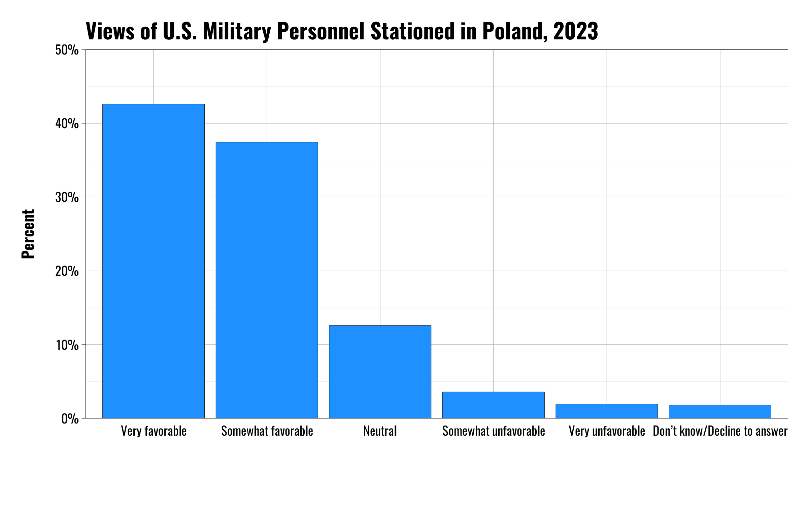
Figure 4 shows the distribution of Polish adults’ views of Poland’s relations with Russia in March of 2023 at the time of our survey.Overwhelmingly respondents indicate that relations between Poland and Russia are “Somewhat hostile” or “Very hostile.”
Distribution of respondents
Figure 5 shows the number of respondents per province In general, most of the group sizes fall between 100 and 200 respondents per province. The lowest number of respondents per group is 52 (Opolskie) and the highest is 339 (Mazowieckie).

Figure 6 shows the number of respondents per district—the lower level administrative unit below the province. Here we can see substantial skew in the number of respondents per unit. 47 districts produce only one respondent. 64 districts only produce 2 respondents. At the other end of the distribution we have a few districts that produce a vastly disproportionate share of our respondents. 51 respondents come from Łódź, 54 from Poznań, and 150 come from Warszawa. Though we run supplemental analyses using districts as a grouping unit, we do not rely on these estimates to discuss variation in attitudes as a function of geography.

Tables
This section contains a number of tables that provide descriptive insights into the data, and information on the models we run for our analysis.
Balance Tables
Table 1 shows the balance of the predictor variables across the four treatment groups in the experiment. Most of the variables in our models are indicator variables, and so the numbers shown in the columns correspond to the number of respondents who chose a particular response for a particular question. For example, the number of people who respond that they identify as either Male or Female.
The value in the parentheses indicates the percentage of responses that fall into each of the four treatment categories. In general, we expect this value to fall close to 25% for each row.
Last, the final column shows the total number of responses for each category/row.
We do not conduct a formal balance test, but this table helps us to ensure that the randomization procedure worked as intended. In general, we see most response-treatment groups falling at around the 25% mark, which is what we should expect if individuals were randomly assigned to one of the four treatment categories. We see more substantial deviations where the total number of observations for a given response is low. For example, with only 40 total respondents indicating that their primary income source was in the agricultural sector, small differences in the number of people who fall into each treatment group have a larger effect on the percentage value.
The final row shows the mean value and standard deviation (in parentheses) for the ideology score, which is the only ordered integer response variable we included in the survey. Since we mean-center this measure, each category should have a mean of approximately 0 and a standard deviation of 0.5.
Model Tables
This section contains the tables for the models we run in our analysis. All of the models were run using brms package version 2.22.8 [Bürkner (2017); Bürkner (2018); Stan2023].
- Table 2 shows the results of a multinomial logit model where we regress the outcome variable on the treatment group variable.
- Table 3 shows the results of our primary multinomial multilevel logit model. This model regresses the outcome response onto the treatment variable and several other predictor variables. Varying intercepts by province.
- Table 4 shows the results of our a multinomial multilevel logit model that regresses the outcome response onto the treatment variable and several other predictor variables. Varying intercepts by province and district.
- Table 5 shows the results of a model where we use the full six category response variable rather than the four category response used in our primary models.
- Table 6 shows the results of a model that replicates our primary multilevel model, but allows the effects of the treatment variable to vary across province.
- Table 7 changes the basic model specification slightly and uses the treatment group as the grouping term for the varying intercepts. We also include a variable indicating whether the respondent reported having personal contact with a U.S. service member, and we allow this effect to vary across treatment groups.
- Table 8 builds upon our primary model in Table 3 by adding a variable indicating whether the respondent reported having personal contact with a U.S. service member, and an interaction term between the contact variable and the treatment. We also include varying intercepts on province.
- Table 9 replicates the models from Table 8 but includes varying intercepts on both province and district.
- Table 10 shows the results of a multilevel ordered logit model. Here we take the original six category response variable, drop the “Don’t know/Decline” Responses, and treat the remaining responses as ordered from “Strongly Oppose” to “Strongly Support”.
| DKDA | Oppose | Support | DKDA | Oppose | Support | |
|---|---|---|---|---|---|---|
| Treatment | ||||||
| Economic | 2.837 | 0.167 | 0.211 | 0.458 | 0.001 | 0.059 |
| [1.662, 4.225] | [−0.330, 0.657] | [−0.127, 0.555] | [−0.182, 1.117] | [−0.373, 0.377] | [−0.251, 0.371] | |
| Security | 2.286 | 0.454 | −0.062 | −0.058 | 0.356 | 0.016 |
| [1.085, 3.679] | [0.003, 0.905] | [−0.391, 0.260] | [−0.763, 0.650] | [−0.004, 0.718] | [−0.297, 0.332] | |
| Security and Economic | 2.607 | 0.231 | −0.020 | −0.161 | 0.107 | 0.047 |
| [1.434, 3.983] | [−0.250, 0.704] | [−0.351, 0.304] | [−0.896, 0.543] | [−0.259, 0.470] | [−0.268, 0.361] | |
| Intercept | −3.918 | −0.559 | 1.557 | −1.795 | 0.110 | 1.079 |
| [−5.233, −2.829] | [−0.908, −0.218] | [1.330, 1.795] | [−2.308, −1.328] | [−0.145, 0.371] | [0.867, 1.300] | |
| N | 2239 | 2254 | ||||
| N.Groups | 0 | 0 | ||||
| DKDA | Oppose | Support | DKDA | Oppose | Support | |
|---|---|---|---|---|---|---|
| Treatment | ||||||
| Economic | 4.786 | 0.250 | 0.203 | 0.790 | 0.061 | 0.043 |
| [2.881, 7.322] | [−0.261, 0.763] | [−0.148, 0.560] | [0.087, 1.503] | [−0.317, 0.436] | [−0.278, 0.365] | |
| Security | 3.934 | 0.579 | −0.064 | 0.136 | 0.430 | 0.015 |
| [2.024, 6.475] | [0.104, 1.058] | [−0.400, 0.273] | [−0.644, 0.929] | [0.063, 0.797] | [−0.308, 0.340] | |
| Security and Economic | 4.353 | 0.322 | 0.001 | −0.081 | 0.169 | 0.084 |
| [2.444, 6.893] | [−0.158, 0.813] | [−0.340, 0.336] | [−0.885, 0.718] | [−0.205, 0.541] | [−0.238, 0.410] | |
| Age | ||||||
| 25-34 | −1.800 | −0.076 | −0.112 | −1.393 | −0.312 | −0.058 |
| [−2.350, −1.245] | [−0.404, 0.254] | [−0.374, 0.153] | [−1.921, −0.859] | [−0.606, −0.020] | [−0.326, 0.204] | |
| 35-44 | −1.988 | −0.308 | 0.040 | −1.494 | −0.618 | 0.045 |
| [−2.547, −1.421] | [−0.630, 0.016] | [−0.221, 0.299] | [−2.030, −0.954] | [−0.912, −0.324] | [−0.223, 0.310] | |
| 45-54 | −1.863 | −0.348 | 0.085 | −1.460 | −0.694 | 0.151 |
| [−2.462, −1.275] | [−0.695, 0.005] | [−0.194, 0.366] | [−2.040, −0.876] | [−1.007, −0.377] | [−0.128, 0.430] | |
| 55-64 | −1.785 | −0.439 | 0.463 | −1.546 | −0.926 | 0.413 |
| [−2.469, −1.104] | [−0.844, −0.038] | [0.153, 0.768] | [−2.202, −0.895] | [−1.267, −0.583] | [0.111, 0.715] | |
| 65+ | −2.522 | 0.198 | 0.657 | −2.220 | −0.498 | 0.566 |
| [−3.673, −1.372] | [−0.535, 0.949] | [0.138, 1.172] | [−3.282, −1.145] | [−1.092, 0.104] | [0.063, 1.073] | |
| Income | ||||||
| Second Quantile | −0.902 | 0.022 | −0.103 | −0.912 | −0.038 | −0.106 |
| [−1.421, −0.381] | [−0.301, 0.343] | [−0.356, 0.150] | [−1.415, −0.406] | [−0.315, 0.244] | [−0.348, 0.137] | |
| Third Quantile | −0.562 | 0.122 | −0.061 | −0.706 | 0.078 | −0.029 |
| [−1.072, −0.053] | [−0.199, 0.441] | [−0.308, 0.187] | [−1.199, −0.210] | [−0.197, 0.355] | [−0.269, 0.211] | |
| Fourth Quantile | −0.911 | 0.011 | 0.051 | −0.947 | −0.022 | −0.040 |
| [−1.484, −0.329] | [−0.332, 0.354] | [−0.208, 0.311] | [−1.505, −0.395] | [−0.317, 0.273] | [−0.297, 0.218] | |
| Fifth Quantile | −0.754 | 0.112 | 0.178 | −0.773 | 0.037 | 0.136 |
| [−1.429, −0.084] | [−0.278, 0.506] | [−0.115, 0.477] | [−1.413, −0.132] | [−0.287, 0.360] | [−0.151, 0.418] | |
| Income Decline | −0.314 | 0.637 | −0.125 | 0.307 | 0.244 | −0.315 |
| [−1.558, 0.873] | [−0.201, 1.465] | [−0.762, 0.559] | [−0.679, 1.254] | [−0.408, 0.909] | [−0.920, 0.310] | |
| Income Source | ||||||
| Public sector contract work | 1.317 | 0.134 | 0.638 | −0.242 | 0.102 | 0.865 |
| [−1.086, 4.226] | [−1.100, 1.423] | [−0.314, 1.539] | [−1.979, 1.669] | [−0.867, 1.089] | [−0.048, 1.781] | |
| Private sector contract work | 1.392 | 0.108 | 0.628 | −0.222 | 0.264 | 1.014 |
| [−0.811, 4.166] | [−1.018, 1.302] | [−0.263, 1.433] | [−1.695, 1.488] | [−0.636, 1.167] | [0.152, 1.849] | |
| Pension or Retirement | 2.574 | −0.180 | 0.569 | 1.188 | 0.215 | 1.130 |
| [0.214, 5.461] | [−1.471, 1.153] | [−0.382, 1.487] | [−0.453, 3.033] | [−0.776, 1.219] | [0.208, 2.042] | |
| Self-employed (non-agricultural) | −0.063 | −0.320 | 0.385 | −1.270 | 0.217 | 1.102 |
| [−3.492, 3.344] | [−1.673, 1.049] | [−0.605, 1.336] | [−4.258, 1.264] | [−0.828, 1.282] | [0.123, 2.078] | |
| Other sources | 1.869 | 0.091 | 0.573 | −0.154 | −0.150 | 0.426 |
| [−0.361, 4.663] | [−1.110, 1.348] | [−0.367, 1.445] | [−1.683, 1.578] | [−1.093, 0.796] | [−0.483, 1.319] | |
| Education | ||||||
| Bachelor's degree or Engineer | 0.776 | 0.454 | 1.938 | 3.443 | 0.142 | 5.147 |
| [−2.576, 4.283] | [−2.417, 3.768] | [−0.934, 5.288] | [−1.006, 11.167] | [−2.094, 2.490] | [−0.136, 14.881] | |
| Master's degree or higher | 0.837 | 0.236 | 1.655 | 2.964 | 0.354 | 5.377 |
| [−2.482, 4.331] | [−2.636, 3.514] | [−1.245, 5.002] | [−1.502, 10.667] | [−1.864, 2.707] | [0.109, 15.121] | |
| Primary Education | 1.987 | 0.060 | 2.143 | 5.430 | 1.169 | 6.328 |
| [−1.478, 5.587] | [−3.037, 3.512] | [−0.806, 5.578] | [0.909, 13.128] | [−1.191, 3.616] | [0.927, 16.065] | |
| Secondary Education | 0.355 | 0.288 | 1.595 | 3.248 | 0.443 | 5.280 |
| [−2.895, 3.727] | [−2.560, 3.568] | [−1.258, 4.930] | [−1.115, 10.929] | [−1.769, 2.747] | [−0.007, 15.022] | |
| Vocational School | 0.928 | 0.266 | 1.343 | 3.650 | 0.349 | 5.039 |
| [−2.298, 4.345] | [−2.580, 3.539] | [−1.528, 4.679] | [−0.748, 11.253] | [−1.890, 2.674] | [−0.271, 14.815] | |
| Ideology | ||||||
| Ideology | −0.297 | −0.372 | 0.597 | −0.320 | −0.302 | 0.567 |
| [−0.539, −0.053] | [−0.498, −0.245] | [0.492, 0.704] | [−0.558, −0.078] | [−0.421, −0.182] | [0.465, 0.669] | |
| Minority | ||||||
| Minority: Yes | 0.187 | 0.058 | −0.212 | −0.039 | −0.069 | −0.213 |
| [−0.216, 0.584] | [−0.162, 0.273] | [−0.379, −0.046] | [−0.434, 0.346] | [−0.263, 0.122] | [−0.376, −0.050] | |
| Minority: Decline | 2.046 | −0.219 | −0.448 | 1.104 | −0.587 | −0.595 |
| [1.320, 2.768] | [−0.892, 0.432] | [−0.950, 0.063] | [0.389, 1.791] | [−1.161, −0.019] | [−1.103, −0.090] | |
| Gender | ||||||
| Female | 0.605 | −0.111 | −0.402 | 0.659 | 0.013 | −0.394 |
| [0.364, 0.845] | [−0.242, 0.019] | [−0.505, −0.298] | [0.429, 0.894] | [−0.106, 0.131] | [−0.494, −0.294] | |
| None of the Above | −12.341 | −0.809 | −23.763 | −12.419 | −0.561 | −22.966 |
| [−37.692, 1.672] | [−4.690, 2.984] | [−48.480, −3.601] | [−38.761, 1.638] | [−4.481, 3.156] | [−47.513, −2.539] | |
| Intercept | ||||||
| Intercept | −6.820 | −0.832 | −0.535 | −4.381 | 0.003 | −5.045 |
| [−11.826, −2.282] | [−4.330, 2.269] | [−3.982, 2.487] | [−12.128, 0.402] | [−2.472, 2.395] | [−14.776, 0.340] | |
| N | 2239 | 2254 | ||||
| N.Groups | 16 | 16 | ||||
| Groups | province | province | ||||
| DKDA | Oppose | Support | DKDA | Oppose | Support | |
|---|---|---|---|---|---|---|
| Treatment | ||||||
| Economic | 5.019 | 0.256 | 0.212 | 0.899 | 0.046 | 0.037 |
| [3.104, 7.537] | [−0.270, 0.775] | [−0.138, 0.563] | [0.160, 1.679] | [−0.341, 0.429] | [−0.291, 0.362] | |
| Security | 4.024 | 0.589 | −0.064 | 0.154 | 0.431 | 0.011 |
| [2.084, 6.586] | [0.112, 1.074] | [−0.403, 0.276] | [−0.676, 0.974] | [0.052, 0.807] | [−0.322, 0.336] | |
| Security and Economic | 4.556 | 0.334 | 0.007 | −0.019 | 0.188 | 0.094 |
| [2.622, 7.120] | [−0.154, 0.824] | [−0.327, 0.344] | [−0.841, 0.815] | [−0.190, 0.571] | [−0.225, 0.420] | |
| Age | ||||||
| 25-34 | −1.929 | −0.068 | −0.104 | −1.492 | −0.298 | −0.052 |
| [−2.523, −1.346] | [−0.398, 0.258] | [−0.368, 0.160] | [−2.055, −0.934] | [−0.590, −0.005] | [−0.318, 0.216] | |
| 35-44 | −2.132 | −0.302 | 0.048 | −1.620 | −0.602 | 0.054 |
| [−2.729, −1.534] | [−0.633, 0.026] | [−0.213, 0.314] | [−2.184, −1.057] | [−0.892, −0.308] | [−0.212, 0.319] | |
| 45-54 | −2.001 | −0.345 | 0.095 | −1.565 | −0.683 | 0.161 |
| [−2.644, −1.373] | [−0.699, 0.012] | [−0.185, 0.374] | [−2.177, −0.969] | [−0.992, −0.373] | [−0.120, 0.439] | |
| 55-64 | −1.947 | −0.433 | 0.471 | −1.669 | −0.907 | 0.422 |
| [−2.690, −1.220] | [−0.840, −0.031] | [0.160, 0.779] | [−2.350, −0.984] | [−1.250, −0.555] | [0.119, 0.728] | |
| 65+ | −2.744 | 0.206 | 0.663 | −2.353 | −0.481 | 0.574 |
| [−4.016, −1.502] | [−0.544, 0.962] | [0.133, 1.187] | [−3.473, −1.241] | [−1.090, 0.135] | [0.061, 1.076] | |
| Income | ||||||
| Second Quantile | −0.878 | 0.023 | −0.097 | −0.927 | −0.028 | −0.100 |
| [−1.421, −0.333] | [−0.305, 0.347] | [−0.349, 0.157] | [−1.432, −0.417] | [−0.312, 0.258] | [−0.350, 0.145] | |
| Third Quantile | −0.530 | 0.122 | −0.056 | −0.712 | 0.088 | −0.024 |
| [−1.067, −0.003] | [−0.197, 0.440] | [−0.309, 0.193] | [−1.207, −0.210] | [−0.195, 0.367] | [−0.266, 0.219] | |
| Fourth Quantile | −0.848 | 0.008 | 0.056 | −0.927 | −0.017 | −0.035 |
| [−1.445, −0.251] | [−0.338, 0.351] | [−0.208, 0.326] | [−1.496, −0.363] | [−0.312, 0.274] | [−0.292, 0.219] | |
| Fifth Quantile | −0.688 | 0.110 | 0.186 | −0.751 | 0.036 | 0.141 |
| [−1.378, −0.002] | [−0.276, 0.495] | [−0.115, 0.483] | [−1.407, −0.088] | [−0.297, 0.359] | [−0.143, 0.426] | |
| Income Decline | −0.138 | 0.647 | −0.108 | 0.392 | 0.264 | −0.304 |
| [−1.499, 1.169] | [−0.176, 1.478] | [−0.765, 0.579] | [−0.623, 1.387] | [−0.413, 0.935] | [−0.918, 0.319] | |
| Income Source | ||||||
| Public sector contract work | 1.288 | 0.131 | 0.647 | −0.392 | 0.104 | 0.851 |
| [−1.287, 4.328] | [−1.117, 1.418] | [−0.310, 1.557] | [−2.185, 1.523] | [−0.891, 1.093] | [−0.069, 1.772] | |
| Private sector contract work | 1.197 | 0.102 | 0.631 | −0.448 | 0.274 | 1.002 |
| [−1.152, 4.076] | [−1.007, 1.273] | [−0.245, 1.442] | [−2.008, 1.321] | [−0.644, 1.186] | [0.138, 1.860] | |
| Pension or Retirement | 2.479 | −0.188 | 0.581 | 1.015 | 0.215 | 1.121 |
| [−0.004, 5.504] | [−1.466, 1.129] | [−0.381, 1.490] | [−0.686, 2.853] | [−0.825, 1.238] | [0.183, 2.061] | |
| Self-employed (non-agricultural) | −0.367 | −0.347 | 0.380 | −1.464 | 0.234 | 1.092 |
| [−3.872, 3.174] | [−1.680, 1.009] | [−0.598, 1.322] | [−4.531, 1.080] | [−0.841, 1.300] | [0.107, 2.084] | |
| Other sources | 1.707 | 0.085 | 0.579 | −0.341 | −0.135 | 0.421 |
| [−0.649, 4.606] | [−1.094, 1.306] | [−0.358, 1.460] | [−1.955, 1.400] | [−1.089, 0.826] | [−0.478, 1.328] | |
| Education | ||||||
| Bachelor's degree or Engineer | 0.592 | 0.493 | 1.924 | 3.784 | 0.054 | 5.070 |
| [−3.110, 4.484] | [−2.458, 3.944] | [−0.930, 5.208] | [−1.189, 12.319] | [−2.154, 2.383] | [−0.140, 14.884] | |
| Master's degree or higher | 0.572 | 0.272 | 1.629 | 3.269 | 0.275 | 5.301 |
| [−3.095, 4.428] | [−2.654, 3.689] | [−1.214, 4.906] | [−1.718, 11.814] | [−1.922, 2.587] | [0.089, 15.174] | |
| Primary Education | 2.045 | 0.065 | 2.149 | 5.832 | 1.086 | 6.268 |
| [−1.757, 6.052] | [−3.104, 3.676] | [−0.814, 5.557] | [0.813, 14.384] | [−1.306, 3.573] | [0.982, 16.094] | |
| Secondary Education | 0.062 | 0.319 | 1.574 | 3.528 | 0.358 | 5.207 |
| [−3.517, 3.860] | [−2.601, 3.732] | [−1.256, 4.869] | [−1.387, 12.091] | [−1.817, 2.660] | [0.002, 15.060] | |
| Vocational School | 0.764 | 0.300 | 1.334 | 4.034 | 0.238 | 4.957 |
| [−2.833, 4.563] | [−2.624, 3.736] | [−1.496, 4.655] | [−0.888, 12.612] | [−1.954, 2.567] | [−0.252, 14.792] | |
| Ideology | ||||||
| Ideology | −0.313 | −0.373 | 0.600 | −0.328 | −0.303 | 0.569 |
| [−0.563, −0.067] | [−0.500, −0.245] | [0.492, 0.709] | [−0.570, −0.090] | [−0.423, −0.185] | [0.466, 0.673] | |
| Minority | ||||||
| Minority: Yes | 0.189 | 0.059 | −0.214 | −0.033 | −0.066 | −0.215 |
| [−0.226, 0.600] | [−0.156, 0.275] | [−0.381, −0.048] | [−0.439, 0.365] | [−0.263, 0.129] | [−0.383, −0.048] | |
| Minority: Decline | 2.286 | −0.231 | −0.479 | 1.303 | −0.618 | −0.609 |
| [1.492, 3.103] | [−0.896, 0.415] | [−0.974, 0.024] | [0.535, 2.074] | [−1.196, −0.042] | [−1.115, −0.099] | |
| Gender | ||||||
| Female | 0.596 | −0.111 | −0.401 | 0.665 | 0.010 | −0.394 |
| [0.350, 0.839] | [−0.242, 0.019] | [−0.503, −0.299] | [0.427, 0.900] | [−0.107, 0.127] | [−0.493, −0.295] | |
| None of the Above | −12.052 | −0.823 | −23.786 | −12.523 | −0.559 | −23.163 |
| [−37.784, 2.286] | [−4.751, 3.085] | [−48.319, −3.801] | [−38.647, 1.949] | [−4.449, 3.235] | [−48.092, −2.499] | |
| Intercept | ||||||
| Intercept | −7.038 | −0.904 | −0.529 | −4.847 | 0.035 | −4.961 |
| [−12.329, −2.190] | [−4.560, 2.272] | [−3.873, 2.413] | [−13.415, 0.422] | [−2.461, 2.434] | [−14.827, 0.326] | |
| N | 2239 | 2254 | ||||
| N.Groups | 16 | 16 | ||||
| Groups | province, province:district | province, province:district | ||||
| Stronglysupport | Somewhatsupport | Somewhatoppose | Stronglyoppose | DKDA | Stronglysupport | Somewhatsupport | Somewhatoppose | Stronglyoppose | DKDA | |
|---|---|---|---|---|---|---|---|---|---|---|
| Treatment | ||||||||||
| Economic | 0.164 | 0.240 | −0.008 | 0.446 | 5.552 | −0.003 | 0.050 | 0.113 | −0.078 | 0.563 |
| [−0.223, 0.559] | [−0.143, 0.628] | [−0.660, 0.639] | [−0.236, 1.128] | [2.705, 10.034] | [−0.380, 0.377] | [−0.319, 0.418] | [−0.345, 0.572] | [−0.561, 0.403] | [−0.136, 1.283] | |
| Security | 0.097 | −0.184 | 0.373 | 0.760 | 4.810 | 0.138 | −0.073 | 0.425 | 0.407 | −0.061 |
| [−0.277, 0.475] | [−0.558, 0.197] | [−0.204, 0.958] | [0.132, 1.403] | [1.970, 9.322] | [−0.235, 0.512] | [−0.448, 0.303] | [−0.018, 0.869] | [−0.042, 0.868] | [−0.842, 0.707] | |
| Security and Economic | 0.114 | −0.074 | 0.052 | 0.566 | 5.275 | 0.227 | −0.046 | 0.192 | 0.097 | −0.173 |
| [−0.257, 0.487] | [−0.450, 0.298] | [−0.561, 0.673] | [−0.081, 1.230] | [2.443, 9.785] | [−0.142, 0.598] | [−0.414, 0.320] | [−0.252, 0.645] | [−0.372, 0.565] | [−0.976, 0.613] | |
| Age | ||||||||||
| 25-34 | 0.171 | 0.035 | 0.079 | 0.986 | 0.086 | 0.328 | 0.191 | −0.071 | 0.128 | 1.016 |
| [−0.347, 0.700] | [−0.436, 0.505] | [−0.681, 0.852] | [0.068, 1.997] | [−1.014, 1.258] | [−0.285, 0.949] | [−0.320, 0.699] | [−0.598, 0.463] | [−0.446, 0.707] | [−0.193, 2.407] | |
| 35-44 | 0.648 | 0.165 | 0.019 | 0.830 | 0.252 | 0.878 | −0.090 | −0.430 | −0.394 | 1.342 |
| [0.134, 1.167] | [−0.318, 0.642] | [−0.751, 0.814] | [−0.101, 1.844] | [−0.859, 1.417] | [0.303, 1.462] | [−0.594, 0.412] | [−0.973, 0.105] | [−0.994, 0.207] | [0.164, 2.702] | |
| 45-54 | 0.822 | 0.326 | 0.266 | 1.443 | 0.661 | 1.364 | 0.580 | −0.101 | 0.391 | 1.759 |
| [0.279, 1.386] | [−0.192, 0.855] | [−0.566, 1.102] | [0.493, 2.493] | [−0.488, 1.884] | [0.748, 1.998] | [0.041, 1.120] | [−0.711, 0.508] | [−0.242, 1.021] | [0.461, 3.191] | |
| 55-64 | 1.282 | 0.515 | −0.261 | 0.928 | 1.357 | 1.417 | 0.373 | −1.206 | −0.230 | 1.753 |
| [0.723, 1.848] | [−0.025, 1.060] | [−1.229, 0.704] | [−0.103, 2.033] | [0.218, 2.570] | [0.817, 2.039] | [−0.169, 0.910] | [−1.880, −0.553] | [−0.883, 0.437] | [0.491, 3.168] | |
| 65+ | 1.674 | 1.018 | 1.311 | 1.552 | 0.194 | 1.645 | 0.944 | −0.231 | 0.155 | 0.715 |
| [0.886, 2.474] | [0.230, 1.835] | [0.034, 2.613] | [0.180, 2.968] | [−1.535, 1.902] | [0.855, 2.464] | [0.202, 1.702] | [−1.153, 0.701] | [−0.800, 1.133] | [−0.960, 2.442] | |
| Income | ||||||||||
| Second Quantile | −0.255 | 0.148 | 0.371 | 0.119 | −0.060 | −0.106 | 0.178 | 0.294 | 0.109 | −0.305 |
| [−0.690, 0.181] | [−0.288, 0.582] | [−0.367, 1.123] | [−0.566, 0.809] | [−0.946, 0.792] | [−0.560, 0.345] | [−0.271, 0.624] | [−0.223, 0.821] | [−0.432, 0.650] | [−1.103, 0.465] | |
| Third Quantile | −0.209 | 0.013 | 0.510 | −0.263 | −0.211 | −0.033 | 0.148 | 0.404 | −0.134 | −0.888 |
| [−0.632, 0.216] | [−0.408, 0.437] | [−0.193, 1.225] | [−0.984, 0.454] | [−1.090, 0.650] | [−0.465, 0.402] | [−0.278, 0.575] | [−0.089, 0.908] | [−0.673, 0.410] | [−1.785, −0.059] | |
| Fourth Quantile | 0.351 | 0.344 | 0.465 | 0.062 | 0.034 | 0.094 | 0.217 | 0.172 | 0.078 | −0.599 |
| [−0.097, 0.809] | [−0.106, 0.801] | [−0.313, 1.237] | [−0.659, 0.794] | [−0.914, 0.975] | [−0.345, 0.528] | [−0.222, 0.657] | [−0.359, 0.700] | [−0.457, 0.604] | [−1.487, 0.232] | |
| Fifth Quantile | 0.460 | 0.431 | 0.439 | 0.113 | −0.100 | 0.243 | 0.319 | 0.184 | −0.151 | −0.812 |
| [−0.012, 0.943] | [−0.048, 0.912] | [−0.379, 1.246] | [−0.664, 0.891] | [−1.174, 0.905] | [−0.223, 0.696] | [−0.141, 0.780] | [−0.377, 0.749] | [−0.735, 0.438] | [−1.832, 0.123] | |
| Income Decline | −0.344 | 0.047 | 0.967 | 0.263 | −0.175 | −0.550 | −0.076 | 0.251 | 0.320 | 0.483 |
| [−1.068, 0.385] | [−0.643, 0.764] | [−0.066, 1.980] | [−0.861, 1.304] | [−1.520, 1.059] | [−1.330, 0.212] | [−0.778, 0.640] | [−0.570, 1.043] | [−0.485, 1.098] | [−0.484, 1.420] | |
| Income Source | ||||||||||
| Public sector contract work | 0.799 | 0.443 | 0.233 | 0.309 | 1.272 | 0.539 | 1.587 | −0.134 | 0.632 | −0.404 |
| [−0.242, 1.822] | [−0.589, 1.481] | [−1.307, 1.969] | [−1.314, 2.124] | [−1.184, 4.567] | [−0.464, 1.576] | [0.227, 3.179] | [−1.257, 1.032] | [−0.697, 2.095] | [−2.060, 1.403] | |
| Private sector contract work | 0.630 | 0.564 | 0.058 | 0.456 | 1.301 | 0.563 | 1.827 | 0.009 | 0.852 | −0.416 |
| [−0.327, 1.567] | [−0.394, 1.524] | [−1.311, 1.655] | [−0.991, 2.189] | [−0.935, 4.511] | [−0.369, 1.515] | [0.536, 3.365] | [−0.990, 1.040] | [−0.365, 2.216] | [−1.835, 1.233] | |
| Pension or Retirement | 0.683 | 0.307 | −0.364 | 0.187 | 1.847 | 0.871 | 1.797 | 0.131 | 0.673 | 0.571 |
| [−0.351, 1.715] | [−0.751, 1.373] | [−2.030, 1.429] | [−1.432, 2.039] | [−0.505, 5.160] | [−0.162, 1.900] | [0.428, 3.408] | [−1.038, 1.327] | [−0.673, 2.164] | [−0.981, 2.316] | |
| Self-employed (non-agricultural) | 0.390 | 0.222 | −0.403 | −0.040 | −0.241 | 0.627 | 1.883 | 0.084 | 0.665 | −1.582 |
| [−0.674, 1.473] | [−0.848, 1.327] | [−2.154, 1.455] | [−1.760, 1.891] | [−3.962, 3.538] | [−0.471, 1.723] | [0.476, 3.526] | [−1.092, 1.296] | [−0.768, 2.212] | [−4.782, 0.963] | |
| Other sources | 0.588 | 0.530 | 0.268 | 0.158 | 1.766 | 0.179 | 1.086 | −0.358 | 0.444 | −0.149 |
| [−0.436, 1.598] | [−0.473, 1.540] | [−1.183, 1.929] | [−1.430, 1.964] | [−0.535, 5.034] | [−0.820, 1.206] | [−0.266, 2.669] | [−1.421, 0.720] | [−0.815, 1.860] | [−1.606, 1.535] | |
| Education | ||||||||||
| Bachelor's degree or Engineer | 35.318 | 1.505 | −0.175 | 33.202 | −0.194 | 33.710 | 34.127 | −1.207 | 33.473 | 32.370 |
| [2.308, 96.808] | [−1.309, 4.957] | [−3.112, 3.436] | [0.851, 94.096] | [−3.360, 3.447] | [1.081, 96.234] | [1.659, 96.440] | [−3.410, 1.117] | [1.687, 94.699] | [0.401, 92.433] | |
| Master's degree or higher | 34.975 | 1.239 | −0.021 | 32.648 | −0.236 | 33.905 | 34.377 | −0.614 | 33.374 | 32.062 |
| [1.999, 96.427] | [−1.569, 4.694] | [−2.939, 3.576] | [0.326, 93.346] | [−3.400, 3.379] | [1.290, 96.314] | [1.882, 96.676] | [−2.802, 1.712] | [1.623, 94.473] | [0.156, 92.113] | |
| Primary Education | 35.611 | 1.499 | −1.720 | 33.054 | 1.165 | 35.039 | 35.058 | 0.304 | 33.705 | 34.638 |
| [2.609, 96.979] | [−1.455, 5.055] | [−5.840, 2.360] | [0.664, 93.739] | [−2.095, 4.881] | [2.392, 97.496] | [2.587, 97.247] | [−2.064, 2.769] | [1.907, 94.852] | [2.648, 94.661] | |
| Secondary Education | 34.850 | 1.252 | −0.251 | 32.995 | −0.679 | 33.779 | 34.309 | −0.520 | 33.444 | 32.183 |
| [1.902, 96.284] | [−1.547, 4.672] | [−3.122, 3.320] | [0.637, 93.839] | [−3.804, 2.968] | [1.167, 96.303] | [1.808, 96.611] | [−2.664, 1.784] | [1.678, 94.625] | [0.257, 92.227] | |
| Vocational School | 34.772 | 0.818 | −0.184 | 32.799 | −0.015 | 33.516 | 34.082 | −0.585 | 33.251 | 32.614 |
| [1.831, 96.238] | [−1.965, 4.270] | [−3.091, 3.372] | [0.457, 93.725] | [−3.100, 3.620] | [0.906, 96.033] | [1.598, 96.442] | [−2.766, 1.718] | [1.425, 94.417] | [0.690, 92.670] | |
| Ideology | ||||||||||
| Ideology | 0.463 | 0.155 | 0.053 | 0.012 | 0.208 | 0.504 | 0.140 | −0.088 | 0.126 | 0.092 |
| [0.180, 0.746] | [−0.126, 0.439] | [−0.411, 0.510] | [−0.440, 0.467] | [−0.357, 0.784] | [0.235, 0.777] | [−0.130, 0.408] | [−0.424, 0.246] | [−0.216, 0.469] | [−0.440, 0.626] | |
| Minority | ||||||||||
| Minority: Yes | −0.179 | −0.095 | 0.013 | −0.312 | 0.749 | −0.125 | −0.196 | −0.311 | −0.226 | 0.187 |
| [−0.532, 0.181] | [−0.450, 0.264] | [−0.564, 0.563] | [−0.938, 0.274] | [0.039, 1.428] | [−0.484, 0.235] | [−0.553, 0.161] | [−0.734, 0.110] | [−0.680, 0.217] | [−0.485, 0.835] | |
| Minority: Decline | −0.682 | −0.547 | −0.126 | −0.542 | 1.663 | −1.021 | −1.062 | −1.249 | −0.636 | 0.155 |
| [−1.424, 0.065] | [−1.252, 0.168] | [−1.204, 0.871] | [−1.866, 0.597] | [0.675, 2.628] | [−1.801, −0.265] | [−1.835, −0.334] | [−2.174, −0.406] | [−1.458, 0.136] | [−0.848, 1.103] | |
| Gender | ||||||||||
| Female | −1.167 | −0.466 | 0.051 | −0.642 | 0.551 | −1.028 | −0.562 | 0.235 | 0.054 | 0.677 |
| [−1.456, −0.879] | [−0.761, −0.178] | [−0.429, 0.536] | [−1.093, −0.186] | [−0.107, 1.242] | [−1.307, −0.755] | [−0.835, −0.288] | [−0.104, 0.576] | [−0.288, 0.403] | [0.090, 1.288] | |
| None of the Above | −54.109 | −54.475 | −52.614 | 1.145 | −50.605 | −52.658 | −52.751 | −52.825 | 1.174 | −51.208 |
| [−149.947, −2.750] | [−152.334, −2.732] | [−147.892, −1.462] | [−2.852, 5.236] | [−146.386, 0.950] | [−151.394, −0.961] | [−147.566, −1.215] | [−150.259, −1.347] | [−2.693, 5.097] | [−146.716, −0.067] | |
| Intercept | ||||||||||
| Intercept | −34.780 | −1.010 | −1.636 | −35.347 | −8.989 | −34.500 | −35.621 | 0.072 | −34.740 | −35.638 |
| [−96.244, −1.743] | [−4.616, 1.968] | [−5.574, 1.748] | [−96.355, −2.849] | [−15.265, −3.934] | [−97.020, −1.821] | [−97.850, −3.170] | [−2.477, 2.494] | [−95.853, −2.864] | [−95.690, −3.579] | |
| N | 2239 | 2254 | ||||||||
| N.Groups | 16 | 16 | ||||||||
| Groups | province | province | ||||||||
| DKDA | Oppose | Support | DKDA | Oppose | Support | |
|---|---|---|---|---|---|---|
| Treatment | ||||||
| Economic | 4.756 | 0.213 | 0.198 | 0.722 | 0.075 | 0.023 |
| [2.750, 7.409] | [−0.422, 0.806] | [−0.225, 0.615] | [−0.108, 1.509] | [−0.332, 0.479] | [−0.337, 0.378] | |
| Security | 3.806 | 0.586 | −0.063 | −0.029 | 0.470 | 0.023 |
| [1.749, 6.447] | [−0.068, 1.222] | [−0.418, 0.295] | [−1.086, 0.849] | [0.028, 0.923] | [−0.316, 0.363] | |
| Security and Economic | 4.324 | 0.302 | 0.010 | −0.248 | 0.150 | 0.088 |
| [2.364, 6.915] | [−0.227, 0.824] | [−0.347, 0.368] | [−1.297, 0.674] | [−0.262, 0.554] | [−0.239, 0.427] | |
| Age | ||||||
| 25-34 | −1.852 | −0.067 | −0.118 | −1.426 | −0.310 | −0.058 |
| [−2.409, −1.289] | [−0.391, 0.264] | [−0.381, 0.144] | [−1.963, −0.880] | [−0.602, −0.015] | [−0.325, 0.210] | |
| 35-44 | −2.035 | −0.306 | 0.036 | −1.532 | −0.618 | 0.047 |
| [−2.617, −1.467] | [−0.630, 0.019] | [−0.224, 0.297] | [−2.075, −0.984] | [−0.912, −0.322] | [−0.224, 0.315] | |
| 45-54 | −1.895 | −0.343 | 0.082 | −1.488 | −0.696 | 0.153 |
| [−2.507, −1.280] | [−0.696, 0.011] | [−0.199, 0.355] | [−2.090, −0.889] | [−1.008, −0.382] | [−0.131, 0.438] | |
| 55-64 | −1.823 | −0.423 | 0.457 | −1.590 | −0.921 | 0.416 |
| [−2.525, −1.130] | [−0.828, −0.017] | [0.153, 0.758] | [−2.262, −0.913] | [−1.261, −0.568] | [0.107, 0.722] | |
| 65+ | −2.569 | 0.227 | 0.648 | −2.288 | −0.497 | 0.567 |
| [−3.750, −1.388] | [−0.533, 0.997] | [0.120, 1.159] | [−3.344, −1.206] | [−1.093, 0.108] | [0.060, 1.067] | |
| Income | ||||||
| Second Quantile | −0.939 | 0.015 | −0.102 | −0.936 | −0.035 | −0.103 |
| [−1.476, −0.400] | [−0.315, 0.341] | [−0.357, 0.151] | [−1.444, −0.436] | [−0.318, 0.250] | [−0.354, 0.146] | |
| Third Quantile | −0.590 | 0.119 | −0.065 | −0.724 | 0.080 | −0.031 |
| [−1.099, −0.073] | [−0.207, 0.442] | [−0.314, 0.182] | [−1.216, −0.239] | [−0.196, 0.355] | [−0.272, 0.214] | |
| Fourth Quantile | −0.941 | 0.005 | 0.048 | −0.965 | −0.023 | −0.040 |
| [−1.515, −0.360] | [−0.346, 0.350] | [−0.221, 0.313] | [−1.521, −0.421] | [−0.318, 0.276] | [−0.295, 0.217] | |
| Fifth Quantile | −0.801 | 0.105 | 0.172 | −0.804 | 0.038 | 0.135 |
| [−1.484, −0.130] | [−0.290, 0.495] | [−0.117, 0.460] | [−1.441, −0.157] | [−0.289, 0.368] | [−0.148, 0.421] | |
| Income Decline | −0.404 | 0.645 | −0.144 | 0.295 | 0.258 | −0.315 |
| [−1.679, 0.823] | [−0.195, 1.480] | [−0.793, 0.534] | [−0.714, 1.250] | [−0.413, 0.932] | [−0.932, 0.311] | |
| Income Source | ||||||
| Public sector contract work | 1.322 | 0.162 | 0.654 | −0.297 | 0.099 | 0.872 |
| [−1.160, 4.324] | [−1.102, 1.469] | [−0.289, 1.560] | [−2.034, 1.575] | [−0.886, 1.081] | [−0.069, 1.793] | |
| Private sector contract work | 1.426 | 0.162 | 0.637 | −0.277 | 0.279 | 1.020 |
| [−0.839, 4.318] | [−0.970, 1.348] | [−0.225, 1.452] | [−1.767, 1.449] | [−0.623, 1.168] | [0.149, 1.871] | |
| Pension or Retirement | 2.590 | −0.168 | 0.592 | 1.154 | 0.217 | 1.139 |
| [0.179, 5.578] | [−1.465, 1.168] | [−0.352, 1.522] | [−0.498, 2.989] | [−0.808, 1.229] | [0.202, 2.071] | |
| Self-employed (non-agricultural) | 0.006 | −0.279 | 0.401 | −1.373 | 0.240 | 1.105 |
| [−3.480, 3.424] | [−1.600, 1.117] | [−0.566, 1.346] | [−4.408, 1.168] | [−0.834, 1.291] | [0.120, 2.068] | |
| Other sources | 1.890 | 0.138 | 0.585 | −0.234 | −0.144 | 0.433 |
| [−0.409, 4.755] | [−1.063, 1.387] | [−0.335, 1.471] | [−1.779, 1.493] | [−1.089, 0.803] | [−0.485, 1.341] | |
| Education | ||||||
| Bachelor's degree or Engineer | 0.633 | 0.376 | 1.930 | 3.536 | 0.098 | 5.177 |
| [−2.743, 4.167] | [−2.703, 3.822] | [−0.944, 5.200] | [−1.087, 11.749] | [−2.108, 2.456] | [−0.116, 14.871] | |
| Master's degree or higher | 0.674 | 0.147 | 1.645 | 3.064 | 0.312 | 5.407 |
| [−2.719, 4.210] | [−2.907, 3.588] | [−1.241, 4.899] | [−1.554, 11.264] | [−1.864, 2.646] | [0.105, 15.145] | |
| Primary Education | 1.842 | −0.126 | 2.129 | 5.573 | 1.097 | 6.349 |
| [−1.631, 5.444] | [−3.375, 3.472] | [−0.896, 5.453] | [0.903, 13.758] | [−1.263, 3.596] | [0.966, 16.122] | |
| Secondary Education | 0.162 | 0.186 | 1.589 | 3.332 | 0.391 | 5.310 |
| [−3.114, 3.623] | [−2.861, 3.624] | [−1.288, 4.834] | [−1.221, 11.479] | [−1.763, 2.741] | [0.018, 15.076] | |
| Vocational School | 0.747 | 0.184 | 1.325 | 3.746 | 0.300 | 5.067 |
| [−2.545, 4.194] | [−2.874, 3.608] | [−1.544, 4.554] | [−0.798, 11.993] | [−1.883, 2.643] | [−0.217, 14.822] | |
| Ideology | ||||||
| Ideology | −0.304 | −0.374 | 0.600 | −0.323 | −0.305 | 0.569 |
| [−0.546, −0.060] | [−0.501, −0.247] | [0.493, 0.706] | [−0.565, −0.078] | [−0.423, −0.185] | [0.467, 0.671] | |
| Minority | ||||||
| Minority: Yes | 0.188 | 0.073 | −0.217 | −0.045 | −0.065 | −0.213 |
| [−0.215, 0.589] | [−0.143, 0.289] | [−0.385, −0.048] | [−0.445, 0.347] | [−0.263, 0.128] | [−0.381, −0.048] | |
| Minority: Decline | 2.098 | −0.213 | −0.458 | 1.138 | −0.600 | −0.594 |
| [1.353, 2.825] | [−0.880, 0.455] | [−0.960, 0.056] | [0.436, 1.850] | [−1.160, −0.047] | [−1.095, −0.088] | |
| Gender | ||||||
| Female | 0.605 | −0.112 | −0.402 | 0.659 | 0.013 | −0.395 |
| [0.363, 0.842] | [−0.244, 0.020] | [−0.503, −0.301] | [0.422, 0.894] | [−0.102, 0.132] | [−0.496, −0.295] | |
| None of the Above | −11.837 | −0.918 | −23.851 | −12.251 | −0.626 | −23.010 |
| [−37.065, 2.010] | [−4.789, 2.903] | [−48.344, −3.742] | [−38.079, 1.697] | [−4.462, 3.109] | [−47.770, −2.427] | |
| Intercept | ||||||
| Intercept | −6.694 | −0.806 | −0.530 | −4.396 | 0.025 | −5.081 |
| [−11.682, −2.113] | [−4.376, 2.414] | [−3.888, 2.508] | [−12.606, 0.560] | [−2.455, 2.366] | [−14.819, 0.306] | |
| N | 2239 | 2254 | ||||
| N.Groups | 16 | 16 | ||||
| Groups | province | province | ||||
| DKDA | Oppose | Support | DKDA | Oppose | Support | |
|---|---|---|---|---|---|---|
| Contact | ||||||
| Personal Contact: Yes | −3.359 | −0.041 | 0.711 | −3.660 | −0.397 | 0.674 |
| [−11.339, 0.762] | [−1.699, 1.419] | [−0.308, 1.762] | [−10.832, −0.051] | [−1.432, 0.605] | [0.022, 1.359] | |
| Personal Contact: Don't know/Decline | 0.421 | −0.890 | −0.758 | 0.464 | −1.014 | −1.047 |
| [−3.193, 3.324] | [−4.588, 2.384] | [−2.881, 1.569] | [−1.291, 2.278] | [−5.349, 2.448] | [−2.620, 0.635] | |
| Age | ||||||
| 25-34 | −1.795 | −0.062 | −0.089 | −1.425 | −0.324 | −0.028 |
| [−2.356, −1.234] | [−0.388, 0.265] | [−0.356, 0.174] | [−1.979, −0.881] | [−0.617, −0.028] | [−0.297, 0.246] | |
| 35-44 | −1.978 | −0.294 | 0.073 | −1.542 | −0.639 | 0.096 |
| [−2.539, −1.409] | [−0.623, 0.037] | [−0.194, 0.343] | [−2.087, −1.003] | [−0.933, −0.345] | [−0.174, 0.367] | |
| 45-54 | −1.919 | −0.337 | 0.099 | −1.526 | −0.707 | 0.189 |
| [−2.535, −1.316] | [−0.688, 0.016] | [−0.182, 0.378] | [−2.112, −0.955] | [−1.026, −0.397] | [−0.097, 0.472] | |
| 55-64 | −1.834 | −0.433 | 0.480 | −1.598 | −0.951 | 0.458 |
| [−2.531, −1.145] | [−0.836, −0.033] | [0.171, 0.785] | [−2.247, −0.954] | [−1.300, −0.600] | [0.152, 0.770] | |
| 65+ | −2.554 | 0.216 | 0.665 | −2.239 | −0.514 | 0.593 |
| [−3.736, −1.370] | [−0.520, 0.970] | [0.135, 1.178] | [−3.308, −1.157] | [−1.130, 0.080] | [0.079, 1.099] | |
| Income | ||||||
| Second Quantile | −0.885 | 0.030 | −0.114 | −0.905 | −0.036 | −0.106 |
| [−1.415, −0.363] | [−0.294, 0.354] | [−0.368, 0.141] | [−1.408, −0.402] | [−0.317, 0.243] | [−0.351, 0.141] | |
| Third Quantile | −0.506 | 0.129 | −0.052 | −0.696 | 0.069 | −0.005 |
| [−1.028, 0.008] | [−0.186, 0.448] | [−0.302, 0.197] | [−1.183, −0.215] | [−0.208, 0.343] | [−0.247, 0.239] | |
| Fourth Quantile | −0.872 | 0.024 | 0.053 | −0.934 | −0.024 | −0.027 |
| [−1.456, −0.279] | [−0.313, 0.367] | [−0.216, 0.322] | [−1.481, −0.374] | [−0.319, 0.271] | [−0.284, 0.225] | |
| Fifth Quantile | −0.699 | 0.136 | 0.205 | −0.766 | 0.042 | 0.170 |
| [−1.396, −0.016] | [−0.251, 0.523] | [−0.093, 0.499] | [−1.399, −0.127] | [−0.275, 0.365] | [−0.114, 0.451] | |
| Income Decline | −0.326 | 0.603 | −0.060 | 0.300 | 0.220 | −0.219 |
| [−1.625, 0.861] | [−0.230, 1.434] | [−0.712, 0.625] | [−0.667, 1.250] | [−0.435, 0.882] | [−0.834, 0.410] | |
| Income Source | ||||||
| Public sector contract work | 1.634 | 0.128 | 0.681 | −0.280 | −0.060 | 0.872 |
| [−0.820, 4.676] | [−1.113, 1.398] | [−0.277, 1.588] | [−2.040, 1.653] | [−1.045, 0.921] | [−0.060, 1.797] | |
| Private sector contract work | 1.590 | 0.094 | 0.641 | −0.251 | 0.149 | 1.017 |
| [−0.641, 4.511] | [−1.034, 1.249] | [−0.254, 1.462] | [−1.750, 1.512] | [−0.757, 1.051] | [0.139, 1.877] | |
| Pension or Retirement | 2.769 | −0.191 | 0.630 | 1.091 | 0.082 | 1.184 |
| [0.391, 5.775] | [−1.466, 1.132] | [−0.337, 1.558] | [−0.579, 2.985] | [−0.930, 1.113] | [0.234, 2.130] | |
| Self-employed (non-agricultural) | 0.220 | −0.276 | 0.439 | −1.317 | 0.150 | 1.125 |
| [−3.257, 3.704] | [−1.607, 1.070] | [−0.565, 1.399] | [−4.489, 1.233] | [−0.929, 1.221] | [0.121, 2.137] | |
| Other sources | 1.969 | 0.120 | 0.628 | −0.289 | −0.238 | 0.461 |
| [−0.286, 4.888] | [−1.068, 1.347] | [−0.322, 1.520] | [−1.811, 1.509] | [−1.192, 0.723] | [−0.471, 1.379] | |
| Education | ||||||
| Bachelor's degree or Engineer | 0.813 | 0.496 | 1.793 | 3.927 | 0.072 | 4.917 |
| [−2.568, 4.307] | [−2.507, 3.930] | [−1.096, 5.082] | [−0.694, 11.827] | [−2.109, 2.392] | [−0.378, 14.652] | |
| Master's degree or higher | 0.935 | 0.310 | 1.532 | 3.479 | 0.299 | 5.170 |
| [−2.429, 4.451] | [−2.668, 3.780] | [−1.368, 4.824] | [−1.125, 11.402] | [−1.886, 2.611] | [−0.140, 14.859] | |
| Primary Education | 2.084 | 0.335 | 2.206 | 5.799 | 1.129 | 6.200 |
| [−1.391, 5.666] | [−2.896, 3.908] | [−0.784, 5.529] | [1.088, 13.813] | [−1.217, 3.570] | [0.833, 15.976] | |
| Secondary Education | 0.549 | 0.401 | 1.505 | 3.799 | 0.385 | 5.079 |
| [−2.723, 3.968] | [−2.541, 3.837] | [−1.386, 4.790] | [−0.747, 11.754] | [−1.760, 2.694] | [−0.221, 14.807] | |
| Vocational School | 1.022 | 0.393 | 1.237 | 4.141 | 0.319 | 4.833 |
| [−2.259, 4.453] | [−2.561, 3.811] | [−1.656, 4.512] | [−0.428, 12.089] | [−1.845, 2.628] | [−0.477, 14.529] | |
| Ideology | ||||||
| Ideology | −0.294 | −0.368 | 0.594 | −0.319 | −0.297 | 0.564 |
| [−0.541, −0.052] | [−0.493, −0.243] | [0.486, 0.701] | [−0.562, −0.078] | [−0.415, −0.178] | [0.461, 0.668] | |
| Minority | ||||||
| Minority: Yes | 0.176 | 0.049 | −0.228 | −0.053 | −0.053 | −0.238 |
| [−0.239, 0.582] | [−0.161, 0.261] | [−0.397, −0.062] | [−0.449, 0.345] | [−0.250, 0.145] | [−0.409, −0.070] | |
| Minority: Decline | 2.027 | −0.215 | −0.472 | 1.015 | −0.532 | −0.620 |
| [1.294, 2.749] | [−0.883, 0.437] | [−0.972, 0.036] | [0.318, 1.708] | [−1.108, 0.020] | [−1.129, −0.114] | |
| Gender | ||||||
| Female | 0.599 | −0.103 | −0.392 | 0.659 | 0.012 | −0.382 |
| [0.361, 0.838] | [−0.231, 0.023] | [−0.496, −0.288] | [0.421, 0.898] | [−0.104, 0.130] | [−0.483, −0.281] | |
| None of the Above | −11.765 | 0.088 | −23.953 | −12.473 | −0.045 | −23.248 |
| [−37.468, 1.941] | [−3.763, 3.985] | [−49.335, −3.404] | [−38.606, 1.343] | [−3.935, 3.714] | [−48.231, −2.270] | |
| Intercept | ||||||
| Intercept | −3.243 | −0.644 | −0.503 | −4.420 | 0.417 | −4.941 |
| [−8.646, 2.037] | [−4.202, 2.593] | [−3.925, 2.507] | [−12.545, 0.574] | [−2.076, 2.881] | [−14.589, 0.435] | |
| N | 2239 | 2254 | ||||
| N.Groups | 0 | 0 | ||||
| Groups | treatment_group | treatment_group | ||||
| DKDA | Oppose | Support | DKDA | Oppose | Support | |
|---|---|---|---|---|---|---|
| Treatment | ||||||
| Economic | 5.420 | −0.003 | 0.158 | 0.852 | −0.116 | −0.022 |
| [3.043, 8.764] | [−0.563, 0.546] | [−0.219, 0.530] | [0.114, 1.632] | [−0.526, 0.287] | [−0.370, 0.323] | |
| Security | 4.495 | 0.567 | −0.043 | 0.244 | 0.484 | 0.051 |
| [2.097, 7.805] | [0.063, 1.069] | [−0.417, 0.326] | [−0.598, 1.090] | [0.087, 0.883] | [−0.310, 0.407] | |
| Security and Economic | 4.727 | 0.078 | −0.144 | −0.165 | 0.100 | 0.016 |
| [2.356, 8.058] | [−0.436, 0.593] | [−0.507, 0.209] | [−1.060, 0.709] | [−0.301, 0.499] | [−0.333, 0.366] | |
| Contact | ||||||
| Personal Contact: Yes | −1.485 | −0.551 | 1.120 | −0.396 | −0.005 | 0.935 |
| [−15.157, 6.267] | [−2.429, 1.101] | [0.188, 2.203] | [−3.562, 1.810] | [−0.993, 1.014] | [0.157, 1.802] | |
| Personal Contact: Don't know/Decline | −5.830 | −9.316 | −3.124 | −0.999 | −39.625 | −2.523 |
| [−24.433, 3.121] | [−26.162, −1.701] | [−5.103, −1.562] | [−3.228, 0.862] | [−69.414, −11.234] | [−4.390, −1.014] | |
| Interactions | ||||||
| Security X Personal Contact | 0.114 | −0.961 | −1.065 | −57.948 | −1.348 | −0.775 |
| [−8.721, 14.013] | [−3.304, 1.411] | [−2.367, 0.168] | [−86.616, −30.772] | [−2.829, 0.067] | [−1.874, 0.291] | |
| Economic X Personal Contact | −17.551 | 1.116 | −0.531 | −28.214 | 0.368 | 0.062 |
| [−42.070, 3.160] | [−0.959, 3.395] | [−1.930, 0.842] | [−56.163, −4.170] | [−1.081, 1.849] | [−1.154, 1.288] | |
| Security and Economic X Personal Contact | −6.209 | 1.680 | 0.356 | −13.509 | −0.499 | −0.108 |
| [−22.559, 9.480] | [−0.417, 3.996] | [−1.110, 1.864] | [−35.100, 0.014] | [−1.917, 0.919] | [−1.229, 1.002] | |
| Security X Personal Contact: Don't know/Decline | 5.177 | 7.885 | 2.453 | 1.897 | 38.333 | 2.097 |
| [−4.277, 23.857] | [−0.248, 24.844] | [0.361, 4.820] | [−0.815, 4.756] | [9.970, 68.068] | [0.033, 4.389] | |
| Economic X Personal Contact: Don't know/Decline | 6.188 | 11.164 | 3.148 | 1.628 | 41.869 | 2.223 |
| [−3.905, 24.803] | [2.850, 28.096] | [0.420, 6.547] | [−2.679, 5.816] | [13.218, 71.554] | [−0.914, 5.715] | |
| Security and Economic X Personal Contact: Don't know/Decline | 15.376 | 16.009 | 10.526 | 2.943 | 40.224 | 2.305 |
| [2.043, 38.523] | [3.211, 37.543] | [2.900, 26.363] | [−0.024, 6.115] | [11.784, 69.938] | [−0.098, 5.061] | |
| Age | ||||||
| 25-34 | −1.821 | −0.034 | −0.052 | −1.340 | −0.333 | −0.016 |
| [−2.393, −1.252] | [−0.367, 0.301] | [−0.328, 0.223] | [−1.913, −0.773] | [−0.635, −0.036] | [−0.286, 0.250] | |
| 35-44 | −2.068 | −0.298 | 0.105 | −1.124 | −0.679 | 0.111 |
| [−2.664, −1.474] | [−0.639, 0.044] | [−0.167, 0.379] | [−1.723, −0.511] | [−0.985, −0.375] | [−0.169, 0.389] | |
| 45-54 | −2.046 | −0.344 | 0.117 | −0.926 | −0.724 | 0.212 |
| [−2.677, −1.413] | [−0.711, 0.018] | [−0.166, 0.401] | [−1.596, −0.247] | [−1.044, −0.405] | [−0.080, 0.501] | |
| 55-64 | −2.019 | −0.499 | 0.455 | −1.443 | −1.122 | 0.427 |
| [−2.735, −1.292] | [−0.911, −0.084] | [0.138, 0.767] | [−2.126, −0.751] | [−1.502, −0.747] | [0.112, 0.743] | |
| 65+ | −2.620 | 0.168 | 0.670 | −2.174 | −0.657 | 0.560 |
| [−3.804, −1.411] | [−0.578, 0.931] | [0.142, 1.186] | [−3.253, −1.099] | [−1.269, −0.048] | [0.046, 1.069] | |
| Income | ||||||
| Second Quantile | −0.983 | −0.035 | −0.149 | −1.392 | −0.227 | −0.179 |
| [−1.547, −0.431] | [−0.371, 0.299] | [−0.404, 0.108] | [−1.972, −0.818] | [−0.535, 0.084] | [−0.431, 0.072] | |
| Third Quantile | −0.457 | 0.129 | −0.043 | −0.833 | −0.039 | −0.048 |
| [−1.013, 0.088] | [−0.197, 0.453] | [−0.293, 0.205] | [−1.386, −0.290] | [−0.322, 0.245] | [−0.293, 0.199] | |
| Fourth Quantile | −1.069 | 0.000 | 0.027 | −1.041 | −0.164 | −0.077 |
| [−1.665, −0.461] | [−0.347, 0.351] | [−0.241, 0.292] | [−1.622, −0.464] | [−0.477, 0.147] | [−0.340, 0.184] | |
| Fifth Quantile | −0.982 | 0.110 | 0.158 | −1.096 | −0.051 | 0.132 |
| [−1.718, −0.267] | [−0.286, 0.507] | [−0.139, 0.453] | [−1.800, −0.411] | [−0.382, 0.277] | [−0.158, 0.421] | |
| Income Decline | −0.368 | 0.673 | −0.076 | 0.211 | 0.269 | −0.214 |
| [−1.680, 0.859] | [−0.171, 1.499] | [−0.729, 0.607] | [−0.762, 1.166] | [−0.393, 0.951] | [−0.841, 0.435] | |
| Income Source | ||||||
| Public sector contract work | 1.522 | 0.042 | 0.633 | −0.307 | −0.091 | 0.819 |
| [−0.993, 4.520] | [−1.231, 1.352] | [−0.346, 1.569] | [−2.088, 1.589] | [−1.122, 0.922] | [−0.151, 1.781] | |
| Private sector contract work | 1.472 | 0.020 | 0.596 | −0.346 | 0.111 | 0.966 |
| [−0.784, 4.340] | [−1.128, 1.213] | [−0.301, 1.436] | [−1.885, 1.385] | [−0.832, 1.049] | [0.059, 1.853] | |
| Pension or Retirement | 2.694 | −0.256 | 0.587 | 0.972 | 0.059 | 1.143 |
| [0.265, 5.647] | [−1.585, 1.081] | [−0.413, 1.524] | [−0.711, 2.808] | [−0.998, 1.118] | [0.143, 2.106] | |
| Self-employed (non-agricultural) | 0.046 | −0.306 | 0.421 | −1.319 | 0.165 | 1.119 |
| [−3.535, 3.517] | [−1.660, 1.090] | [−0.586, 1.376] | [−4.482, 1.212] | [−0.922, 1.268] | [0.078, 2.138] | |
| Other sources | 1.946 | 0.059 | 0.593 | −0.344 | −0.261 | 0.416 |
| [−0.333, 4.803] | [−1.170, 1.298] | [−0.353, 1.501] | [−1.929, 1.394] | [−1.251, 0.724] | [−0.541, 1.356] | |
| Education | ||||||
| Bachelor's degree or Engineer | 0.696 | 0.234 | 1.709 | 4.424 | −0.058 | 4.932 |
| [−2.690, 4.237] | [−2.710, 3.618] | [−1.149, 4.996] | [−0.835, 13.621] | [−2.323, 2.311] | [−0.338, 14.719] | |
| Master's degree or higher | 0.866 | 0.049 | 1.446 | 3.998 | 0.177 | 5.186 |
| [−2.469, 4.349] | [−2.886, 3.437] | [−1.406, 4.746] | [−1.224, 13.156] | [−2.118, 2.569] | [−0.089, 14.937] | |
| Primary Education | 2.004 | 0.090 | 2.169 | 6.502 | 1.120 | 6.315 |
| [−1.467, 5.630] | [−3.123, 3.713] | [−0.803, 5.520] | [1.203, 15.628] | [−1.331, 3.661] | [0.940, 16.145] | |
| Secondary Education | 0.434 | 0.133 | 1.429 | 4.311 | 0.294 | 5.118 |
| [−2.831, 3.887] | [−2.773, 3.519] | [−1.388, 4.708] | [−0.874, 13.477] | [−1.974, 2.672] | [−0.149, 14.934] | |
| Vocational School | 0.885 | 0.124 | 1.156 | 4.586 | 0.191 | 4.850 |
| [−2.432, 4.329] | [−2.785, 3.473] | [−1.683, 4.435] | [−0.584, 13.772] | [−2.096, 2.582] | [−0.429, 14.665] | |
| Ideology | ||||||
| Ideology | −0.279 | −0.373 | 0.597 | 0.007 | −0.265 | 0.581 |
| [−0.541, −0.021] | [−0.504, −0.246] | [0.490, 0.702] | [−0.282, 0.300] | [−0.386, −0.144] | [0.475, 0.686] | |
| Minority | ||||||
| Minority: Yes | 0.347 | 0.036 | −0.239 | −0.329 | −0.050 | −0.256 |
| [−0.091, 0.786] | [−0.183, 0.256] | [−0.410, −0.068] | [−0.831, 0.166] | [−0.250, 0.150] | [−0.424, −0.083] | |
| Minority: Decline | 2.063 | −0.274 | −0.500 | 0.884 | −0.814 | −0.733 |
| [1.299, 2.819] | [−0.954, 0.390] | [−1.003, 0.008] | [0.159, 1.584] | [−1.425, −0.212] | [−1.235, −0.220] | |
| Gender | ||||||
| Female | 0.648 | −0.065 | −0.374 | 0.794 | 0.089 | −0.367 |
| [0.358, 0.935] | [−0.201, 0.069] | [−0.480, −0.268] | [0.495, 1.096] | [−0.043, 0.221] | [−0.469, −0.262] | |
| None of the Above | −11.612 | −0.174 | −23.282 | −13.204 | −0.116 | −23.648 |
| [−37.371, 2.381] | [−4.312, 3.974] | [−47.949, −3.199] | [−39.985, 1.207] | [−3.997, 3.666] | [−49.177, −2.571] | |
| Intercept | ||||||
| Intercept | −7.413 | −0.459 | −0.372 | −5.286 | 0.543 | −4.888 |
| [−12.738, −2.572] | [−4.034, 2.709] | [−3.780, 2.569] | [−14.528, 0.256] | [−1.996, 3.001] | [−14.625, 0.506] | |
| N | 2239 | 2254 | ||||
| N.Groups | 16 | 16 | ||||
| Groups | province | province | ||||
| DKDA | Oppose | Support | DKDA | Oppose | Support | |
|---|---|---|---|---|---|---|
| Treatment | ||||||
| Economic | 5.664 | −0.006 | 0.173 | 1.029 | −0.146 | −0.029 |
| [3.270, 9.025] | [−0.566, 0.546] | [−0.208, 0.558] | [0.217, 1.876] | [−0.561, 0.274] | [−0.382, 0.322] | |
| Security | 4.593 | 0.569 | −0.036 | 0.352 | 0.471 | 0.047 |
| [2.176, 7.943] | [0.066, 1.073] | [−0.402, 0.334] | [−0.548, 1.261] | [0.066, 0.880] | [−0.319, 0.407] | |
| Security and Economic | 4.913 | 0.081 | −0.136 | −0.082 | 0.109 | 0.023 |
| [2.501, 8.263] | [−0.439, 0.599] | [−0.496, 0.228] | [−1.007, 0.849] | [−0.300, 0.524] | [−0.329, 0.378] | |
| Contact | ||||||
| Personal Contact: Yes | −1.383 | −0.581 | 1.170 | −0.185 | −0.046 | 0.948 |
| [−15.178, 6.341] | [−2.463, 1.097] | [0.234, 2.274] | [−3.442, 2.155] | [−1.052, 0.975] | [0.163, 1.821] | |
| Personal Contact: Don't know/Decline | −6.011 | −9.317 | −3.114 | −0.780 | −39.124 | −2.557 |
| [−26.031, 3.410] | [−25.902, −1.753] | [−5.062, −1.541] | [−3.039, 1.149] | [−69.578, −10.648] | [−4.461, −1.012] | |
| Interactions | ||||||
| Security X Personal Contact | 0.022 | −0.938 | −1.115 | −58.583 | −1.280 | −0.789 |
| [−8.621, 13.878] | [−3.265, 1.428] | [−2.423, 0.121] | [−88.056, −30.240] | [−2.754, 0.182] | [−1.902, 0.294] | |
| Economic X Personal Contact | −17.659 | 1.151 | −0.570 | −29.223 | 0.419 | 0.051 |
| [−42.636, 2.796] | [−0.994, 3.423] | [−1.995, 0.815] | [−58.422, −4.592] | [−1.009, 1.900] | [−1.145, 1.246] | |
| Security and Economic X Personal Contact | −7.491 | 1.715 | 0.337 | −14.062 | −0.499 | −0.116 |
| [−25.118, 8.446] | [−0.387, 4.026] | [−1.156, 1.853] | [−36.558, −0.142] | [−1.941, 0.919] | [−1.235, 0.998] | |
| Security X Personal Contact: Don't know/Decline | 5.207 | 7.915 | 2.400 | 1.694 | 37.937 | 2.149 |
| [−4.724, 25.111] | [−0.181, 24.430] | [0.339, 4.749] | [−1.192, 4.669] | [9.444, 68.412] | [0.020, 4.536] | |
| Economic X Personal Contact: Don't know/Decline | 6.398 | 11.195 | 3.119 | 1.548 | 41.413 | 2.284 |
| [−4.141, 26.671] | [2.938, 27.731] | [0.414, 6.460] | [−2.822, 5.798] | [12.777, 72.087] | [−0.869, 5.914] | |
| Security and Economic X Personal Contact: Don't know/Decline | 15.690 | 16.009 | 10.444 | 3.007 | 39.803 | 2.337 |
| [2.114, 39.220] | [3.309, 36.843] | [2.880, 25.950] | [−0.040, 6.229] | [11.178, 70.259] | [−0.128, 5.061] | |
| Age | ||||||
| 25-34 | −1.961 | −0.028 | −0.037 | −1.420 | −0.325 | −0.011 |
| [−2.574, −1.354] | [−0.358, 0.308] | [−0.306, 0.231] | [−2.020, −0.836] | [−0.623, −0.031] | [−0.282, 0.256] | |
| 35-44 | −2.215 | −0.290 | 0.118 | −1.214 | −0.675 | 0.116 |
| [−2.846, −1.585] | [−0.633, 0.055] | [−0.149, 0.390] | [−1.861, −0.575] | [−0.975, −0.369] | [−0.160, 0.386] | |
| 45-54 | −2.193 | −0.342 | 0.134 | −0.988 | −0.727 | 0.217 |
| [−2.873, −1.518] | [−0.700, 0.023] | [−0.149, 0.415] | [−1.700, −0.279] | [−1.046, −0.403] | [−0.068, 0.505] | |
| 55-64 | −2.199 | −0.491 | 0.466 | −1.551 | −1.113 | 0.434 |
| [−2.977, −1.443] | [−0.908, −0.081] | [0.157, 0.775] | [−2.279, −0.830] | [−1.492, −0.733] | [0.122, 0.744] | |
| 65+ | −2.862 | 0.178 | 0.680 | −2.315 | −0.648 | 0.568 |
| [−4.140, −1.580] | [−0.578, 0.935] | [0.149, 1.201] | [−3.445, −1.184] | [−1.269, −0.019] | [0.058, 1.080] | |
| Income | ||||||
| Second Quantile | −0.942 | −0.035 | −0.141 | −1.437 | −0.215 | −0.171 |
| [−1.531, −0.362] | [−0.368, 0.294] | [−0.396, 0.115] | [−2.057, −0.830] | [−0.530, 0.103] | [−0.423, 0.081] | |
| Third Quantile | −0.430 | 0.127 | −0.036 | −0.854 | −0.027 | −0.040 |
| [−1.000, 0.150] | [−0.198, 0.452] | [−0.290, 0.217] | [−1.410, −0.310] | [−0.318, 0.260] | [−0.286, 0.206] | |
| Fourth Quantile | −1.018 | −0.004 | 0.036 | −1.046 | −0.156 | −0.068 |
| [−1.654, −0.386] | [−0.359, 0.348] | [−0.234, 0.304] | [−1.638, −0.456] | [−0.468, 0.160] | [−0.332, 0.193] | |
| Fifth Quantile | −0.922 | 0.105 | 0.169 | −1.108 | −0.045 | 0.141 |
| [−1.691, −0.165] | [−0.297, 0.503] | [−0.134, 0.470] | [−1.833, −0.380] | [−0.383, 0.297] | [−0.150, 0.428] | |
| Income Decline | −0.133 | 0.683 | −0.056 | 0.275 | 0.297 | −0.200 |
| [−1.546, 1.227] | [−0.168, 1.543] | [−0.711, 0.644] | [−0.752, 1.274] | [−0.392, 0.993] | [−0.831, 0.450] | |
| Income Source | ||||||
| Public sector contract work | 1.487 | 0.039 | 0.638 | −0.483 | −0.079 | 0.801 |
| [−1.194, 4.676] | [−1.263, 1.395] | [−0.360, 1.576] | [−2.354, 1.501] | [−1.144, 0.980] | [−0.182, 1.758] | |
| Private sector contract work | 1.269 | 0.014 | 0.593 | −0.571 | 0.124 | 0.950 |
| [−1.179, 4.313] | [−1.141, 1.237] | [−0.338, 1.451] | [−2.218, 1.252] | [−0.852, 1.098] | [0.035, 1.843] | |
| Pension or Retirement | 2.602 | −0.274 | 0.594 | 0.844 | 0.056 | 1.129 |
| [−0.013, 5.734] | [−1.604, 1.118] | [−0.414, 1.546] | [−0.924, 2.767] | [−1.027, 1.133] | [0.160, 2.109] | |
| Self-employed (non-agricultural) | −0.300 | −0.334 | 0.406 | −1.537 | 0.186 | 1.107 |
| [−3.969, 3.347] | [−1.729, 1.089] | [−0.622, 1.399] | [−4.564, 1.106] | [−0.965, 1.346] | [0.058, 2.151] | |
| Other sources | 1.782 | 0.052 | 0.596 | −0.535 | −0.251 | 0.406 |
| [−0.715, 4.822] | [−1.184, 1.338] | [−0.374, 1.519] | [−2.215, 1.298] | [−1.269, 0.774] | [−0.552, 1.348] | |
| Education | ||||||
| Bachelor's degree or Engineer | 0.482 | 0.201 | 1.697 | 4.742 | −0.152 | 4.890 |
| [−3.305, 4.513] | [−2.819, 3.663] | [−1.152, 5.015] | [−0.893, 14.482] | [−2.458, 2.288] | [−0.460, 14.557] | |
| Master's degree or higher | 0.557 | 0.021 | 1.429 | 4.278 | 0.100 | 5.150 |
| [−3.223, 4.611] | [−2.939, 3.476] | [−1.409, 4.759] | [−1.371, 13.975] | [−2.204, 2.528] | [−0.175, 14.798] | |
| Primary Education | 2.063 | 0.003 | 2.173 | 6.953 | 1.046 | 6.303 |
| [−1.786, 6.127] | [−3.248, 3.630] | [−0.767, 5.606] | [1.247, 16.721] | [−1.421, 3.650] | [0.893, 16.026] | |
| Secondary Education | 0.094 | 0.101 | 1.420 | 4.562 | 0.217 | 5.088 |
| [−3.599, 4.045] | [−2.835, 3.539] | [−1.395, 4.742] | [−1.017, 14.295] | [−2.073, 2.654] | [−0.247, 14.691] | |
| Vocational School | 0.672 | 0.092 | 1.160 | 4.941 | 0.094 | 4.815 |
| [−3.047, 4.629] | [−2.871, 3.529] | [−1.656, 4.438] | [−0.658, 14.698] | [−2.198, 2.506] | [−0.519, 14.458] | |
| Ideology | ||||||
| Ideology | −0.289 | −0.375 | 0.600 | 0.011 | −0.269 | 0.583 |
| [−0.554, −0.031] | [−0.503, −0.246] | [0.491, 0.706] | [−0.288, 0.311] | [−0.394, −0.145] | [0.479, 0.687] | |
| Minority | ||||||
| Minority: Yes | 0.367 | 0.037 | −0.241 | −0.335 | −0.044 | −0.257 |
| [−0.093, 0.827] | [−0.182, 0.255] | [−0.411, −0.070] | [−0.839, 0.159] | [−0.245, 0.157] | [−0.428, −0.088] | |
| Minority: Decline | 2.321 | −0.292 | −0.530 | 1.109 | −0.859 | −0.751 |
| [1.478, 3.179] | [−0.982, 0.376] | [−1.047, −0.017] | [0.317, 1.922] | [−1.480, −0.251] | [−1.264, −0.228] | |
| Gender | ||||||
| Female | 0.628 | −0.065 | −0.373 | 0.807 | 0.084 | −0.367 |
| [0.327, 0.922] | [−0.200, 0.070] | [−0.480, −0.269] | [0.504, 1.116] | [−0.044, 0.214] | [−0.471, −0.263] | |
| None of the Above | −11.423 | −0.216 | −23.375 | −13.195 | −0.199 | −23.654 |
| [−37.145, 2.895] | [−4.356, 3.944] | [−48.073, −3.374] | [−39.278, 1.471] | [−4.149, 3.665] | [−48.792, −2.479] | |
| Intercept | ||||||
| Intercept | −7.599 | −0.462 | −0.379 | −5.839 | 0.583 | −4.842 |
| [−13.361, −2.441] | [−4.054, 2.729] | [−3.782, 2.608] | [−15.701, 0.061] | [−2.043, 3.068] | [−14.462, 0.575] | |
| N | 2239 | 2254 | ||||
| N.Groups | 16 | 16 | ||||
| Groups | province, province:district | province, province:district | ||||
| 100 km | 5 km | |
|---|---|---|
| Treatment | ||
| Economic | −0.011 | −0.056 |
| [−0.197, 0.172] | [−0.235, 0.122] | |
| Security | −0.087 | −0.218 |
| [−0.270, 0.095] | [−0.395, −0.038] | |
| Security and Economic | −0.012 | 0.019 |
| [−0.197, 0.169] | [−0.157, 0.195] | |
| Age | ||
| 25-34 | −0.085 | 0.118 |
| [−0.341, 0.170] | [−0.128, 0.364] | |
| 35-44 | 0.294 | 0.638 |
| [0.040, 0.552] | [0.391, 0.886] | |
| 45-54 | 0.233 | 0.689 |
| [−0.038, 0.508] | [0.430, 0.946] | |
| 55-64 | 0.725 | 1.118 |
| [0.452, 0.998] | [0.857, 1.377] | |
| 65+ | 0.594 | 0.937 |
| [0.219, 0.961] | [0.594, 1.284] | |
| Income | ||
| Second Quantile | −0.290 | −0.184 |
| [−0.508, −0.077] | [−0.399, 0.032] | |
| Third Quantile | −0.188 | −0.096 |
| [−0.402, 0.024] | [−0.302, 0.109] | |
| Fourth Quantile | 0.154 | −0.008 |
| [−0.060, 0.373] | [−0.218, 0.201] | |
| Fifth Quantile | 0.226 | 0.179 |
| [0.000, 0.456] | [−0.038, 0.397] | |
| Income Decline | −0.450 | −0.474 |
| [−0.794, −0.098] | [−0.817, −0.125] | |
| Income Source | ||
| Public sector contract work | 0.531 | 0.400 |
| [−0.018, 1.079] | [−0.140, 0.927] | |
| Private sector contract work | 0.398 | 0.323 |
| [−0.110, 0.903] | [−0.175, 0.811] | |
| Pension or Retirement | 0.597 | 0.598 |
| [0.040, 1.139] | [0.062, 1.133] | |
| Self-employed (non-agricultural) | 0.375 | 0.418 |
| [−0.207, 0.948] | [−0.139, 0.975] | |
| Other sources | 0.375 | 0.230 |
| [−0.161, 0.909] | [−0.289, 0.752] | |
| Education | ||
| Bachelor's degree or Engineer | 0.744 | 0.237 |
| [−0.597, 2.043] | [−0.986, 1.445] | |
| Master's degree or higher | 0.601 | 0.292 |
| [−0.727, 1.902] | [−0.924, 1.497] | |
| Primary Education | 1.049 | 0.689 |
| [−0.320, 2.412] | [−0.575, 1.934] | |
| Secondary Education | 0.483 | 0.165 |
| [−0.839, 1.783] | [−1.056, 1.368] | |
| Vocational School | 0.503 | 0.065 |
| [−0.831, 1.801] | [−1.149, 1.280] | |
| Ideology | ||
| Ideology | 0.327 | 0.318 |
| [0.192, 0.463] | [0.191, 0.448] | |
| Minority | ||
| Minority: Yes | −0.070 | 0.073 |
| [−0.245, 0.106] | [−0.099, 0.248] | |
| Minority: Decline | −0.373 | −0.182 |
| [−0.749, 0.011] | [−0.533, 0.168] | |
| Gender | ||
| Female | −0.723 | −0.767 |
| [−0.857, −0.586] | [−0.899, −0.634] | |
| None of the Above | −2.751 | −1.546 |
| [−5.583, −0.395] | [−4.318, 0.706] | |
| Intercept | ||
| Num.Obs. | 2172 | 2178 |
| R2 | 0.102 | 0.136 |
| R2 Marg. | 0.101 | 0.135 |
| ELPD | −2816.3 | −3228.0 |
| ELPD s.e. | 33.9 | 24.4 |
| LOOIC | 5632.6 | 6455.9 |
| LOOIC s.e. | 67.8 | 48.8 |
| WAIC | 5631.2 | 6454.2 |
| N | 2172 | 2178 |
| N.Groups | 16 | 16 |
| Groups | province | province |
| sd.Province. | 0.05 | 0.063 |
Results Figures
This section displays several figures derived from the models above. These figures are intended to help communicate the results of our analysis in a more substantively meaningful and accessible way. In general, given our use of multilevel multinomial logit models, we display results on a probability scale rather than discussing results in terms of odds ratios. Some of this content may be redundant to content in the primary manuscript. All of the figures shown here were generated using the {tidybayes} package (Kay n.d.).
Effect of Distance on Expressed Attitudes
Here we present a series of figures that contrast the posterior distribution samples from the two models predicting responses to the question regarding support for the construction of a new U.S. military facility in Poland. As we discuss in the manuscript, each survey participant is presented with one of four short vignettes and then asked about their level of support for the construction of a new U.S. military facility—first at a proposed distance of 100km and then a distance of 5km.
For each model we draw 500 sample values from the posterior distribution to generate a set of predicted probability values for the four possible outcomes responses/choices (i.e. Neutral, Oppose, Support, and Don’t know/Decline). To generate these values we set all of the predictor variables to their modal or mean values. We allow the treatment variables and grouping categories to take on the values observed in the data—for example, the first set of models includes four treatment categories and varying intercepts on the province grouping term, and so we end up with 64 (4 treatment groups \(\times\) 16 provinces) groups of predicted probabilities corresponding to the 16 provinces in the data. For each individual distance-treatment grouping, we allow the province to vary when generating our predicted probabilities, meaning our posterior samples are actually vectors with 8,000 rows (500 samples \(\times\) 16 provinces). When we calculate the contrasts we calculate the within-group (e.g. province) differences in the predicted probability values.
Equation 1 shows how we calculate the distance effect. \(\mathbb{E}[Y_{t,r,p,i,5km}]\) is the expected value of \(Y\) for treatment group \(t\), for response \(r\), in province \(p\), for draw/row \(i\) for the 5 km model. Similarly, \(\mathbb{E}[Y_{t,r,p,i,100km}]\) is the expected value of \(Y\) for treatment group \(t\), for response\(r\), in province \(p\), for draw/row \(i\) for the 100 km model.
\[\text{Distance Effect} = (\mathbb{E}[Y_{t,r,p,i,5km}] - \mathbb{E}[Y_{t,r,p,i,100km}]) \tag{1}\]
Once we have these predicted values for each of the two models, we then compare the posterior samples by subtracting the 100k posterior values from the 5k posterior values. Accordingly, positive values indicate that support is higher when the proposed distance is smaller, while smaller values indicate that support is stronger where the proposed distance is greater. For example, if the median posterior value for the “Support” outcome response is 0.80 for the 5km model and 0.60 for the 100k model, the resulting contrast value would be 0.20, which would tell us that the median predicted level for the support response is 20 percentage points higher for the 5k model.
We present a series of figures depicting these contrasts below. The dotplots depict the distribution of the posterior contrasts, with blue indicating observed values fall above 0 and red indicating that the observed values fall below 0. We also plot point intervals showing the median posterior contrast value, surrounded by 50% and 89% credible intervals. The dashed line represents 0. Finally, in each panel we also show the \(Pr(Direction)\) statistic—the probability that the median value falls above/below 0. This takes on a value in the range of \([0.5, 1.0]\).
A Note on Treatment Effects
In the manuscript we focus primarily on generating contrasts based around average and modal. observations, though we do allow the grouping terms to vary to incorporate regional and geographic uncertainty and variation. We do not display the average treatment effect (ATE) contrasts here. Given our use of a multilevel categorical model containing several factor/categorical predictor variables we quickly run up against computing and memory constraints. Even subsetting the posterior draws to isolate particular response categories and treatment combinations (or distance combinations) can still generate massive vectors and requires over 100GB of memory. When we increase the grouping terms to the 300\(+\) districts and 16 provinces this becomes impossible to compute. Accordingly, we stick with presenting contrasts based on groupings that are very common in the data.
Province-Level Models
In this section we present a series of figures plotting the posterior contrasts for each of the treatment group categories. Higher/more positive values indicate a higher probability of the given response in the 5 km model and lower/more negative probability values indicate a higher probability of a given response in the 100 km model.1
In general we observe similar patterns across all four panels, so rather than repeat ourselves we provide a general summary of the findings. Across all four panels we see that there is a slightly higher probability of a respondent responding with “Neutral” when the proposed distance is closer as compared to farther away. The posterior sample median generally ranges from approximately 0.02 to 0.09. Similarly, the \(Pr(Direction)\) statistic ranges from approximately 0.72 to 0.94, indicating fairly strong probabilities of observing a positive effect here.
Though neutrality is also important, the remaining panels for Support and Opposition to the proposed U.S. military facility are perhaps more intuitively impactful. We see that across all four treatment groupings, respondents are less likely to support a new U.S. military facility when the proposed distance is closer (i.e. 5 km) than further away (i.e. 100 km). The probability of the observed difference is high, with all four groupings seeing 98–99% of the posterior contrasts falling below 0. Furthermore, the magnitude of the median contrast is fairly large, with differences in the predicted probability values falling between approximately 0.12 and 0.15 across the treatment groups.
Similarly, we observe fairly strong evidence that respondents are more likely to oppose a new U.S. military facility when the proposed distance is closer. We find \(Pr(Direction)\) statistics of approximately 0.98 or greater across all four groups, with median contrasts between approximately 0.10 and 0.12 in all groups.
These results are broadly consistent with a “NIMBYism” theme—people in Poland generally like U.S. military personnel and appear supportive of the security ties between the U.S. and Poland, but are less likely to support a new U.S. military facility if that facility is going to be located close by.

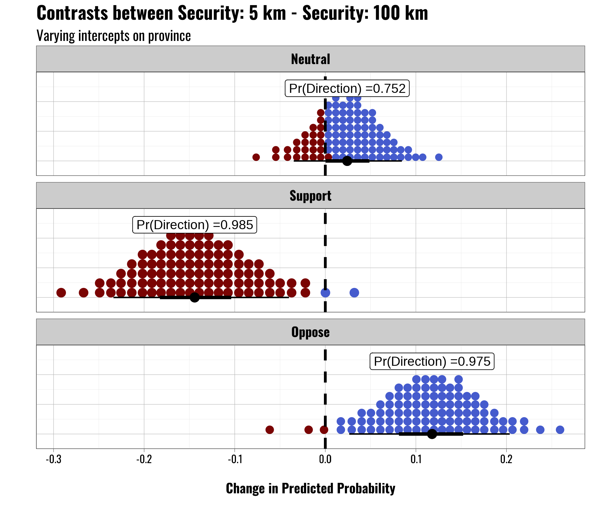

District-Level Models
The following figures show the contrasts in predicted probabilities for the 5 km and 100 km distance questions, within treatment groups. The results presented in this section are from models that treat respondents as nested within districts, which are themselves nested within provinces. Accordingly, the models generating these figures include varying intercept terms for both province and district.
As in the previous section, we again find results largely consistent with a “NIMBY” framework. Respondents are generally less supportive of a U.S. military facility when the proposed distance for the facility’s location is 5km away as compared to 100 km away. This pattern holds across all four treatment groups, with \(Pr(Direction)\) values around 0.98 or higher and median posterior contrasts in the 0.10 to 0.15 range in the “Support” and “Oppose” response groupings.

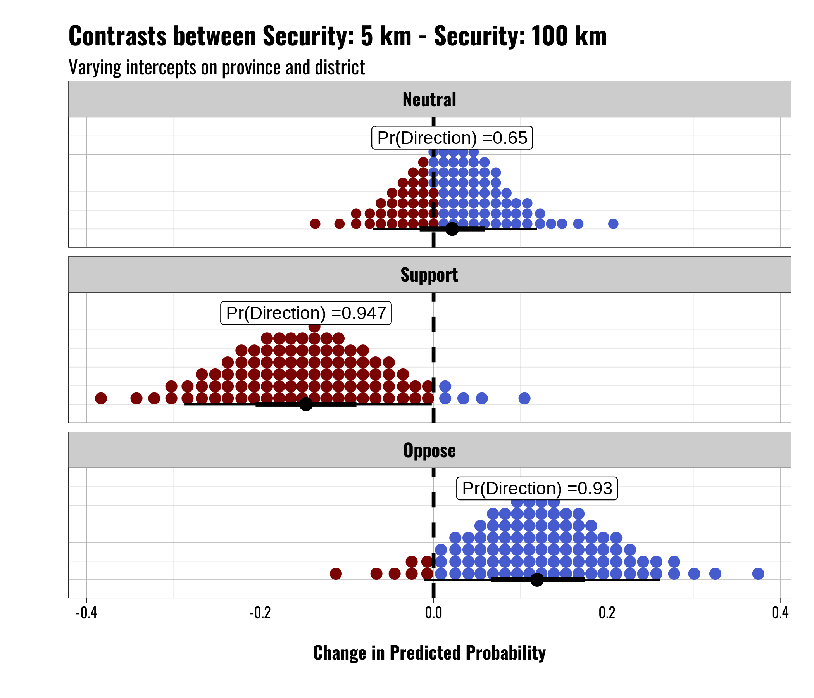

Moderating Effect of Contact
In this section we present a series of figures that build on those in the previous section. Above we explore the contrasts in posterior distributions between the 100km and 5 km models. Here we follow a similar procedure, presenting the contrasts in distance effects between those who report. having contact with U.S. military personnel and those who do not report and interpersonal contact with U.S. military personnel. Equation 2 shows how we calculate these contrasts. In general, this is similar to what we do above to generate the contrasts for distance, but here we are actually generating contrasts between two contrasts. This is essentially a differences-in-differences.
As we describe above, we first take 500 draws/samples from the posterior distribution for each comparison grouping. For example, we obtain 500 draws for one “group” when we take draws from the 100 km distance model and set contact to “Yes”, response = “Support”, treatment group to “Control”, and province to “Śląskie”. We would generate another sample by changing contact to “No” and keeping the rest of the settings the same. Because we take posterior draws for every province, we actually end up with 8,000 posterior draws (500 draws \(\times\) 16 provinces).
Second, after generating the posterior samples for each grouping we then calculate the contrast values. Each grouping thus leaves us with a vector of posterior draws with 8,000 rows. We then subtract these rows from one another to obtain our contrasts.
\(\mathbb{E}[Y_{t,r,p,i,5km}]\) is the expected value of \(Y\) for treatment group \(t\), for response \(r\), in province \(p\), for draw/row \(i\) for the 5 km model. Similarly, \(\mathbb{E}[Y_{t,r,p,i,100km}]\) is the expected value of \(Y\) for treatment group \(t\), for response\(r\), in province \(p\), for draw/row \(i\) for the 100 km model. The superscript takes on a value of \(0\) for no reported contact and \(1\) for reported contact. The result is a comparison of how large an effect distance has on the expected outcome between the two contact categories.
\[\text{Contact Effect} = (\mathbb{E}[Y^0_{t,r,p,i,5km}] - \mathbb{E}[Y^0_{t,r,p,i,100km}]) - (\mathbb{E}[Y^1_{t,r,p,i,5km}] - \mathbb{E}[Y^1_{t,r,p,i,100km}]) \tag{2}\]
In general, we find some evidence that those who report personal contact with U.S. military personnel see a kind of “offset” effect, where contact appears to negate the effect of distance to some extent.
Province-Level Contact Models
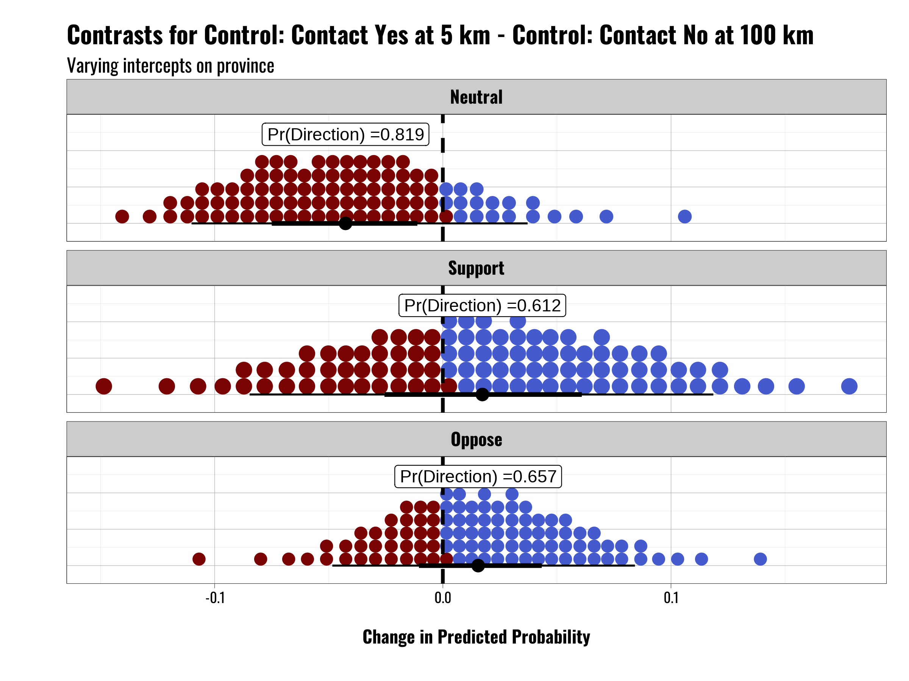
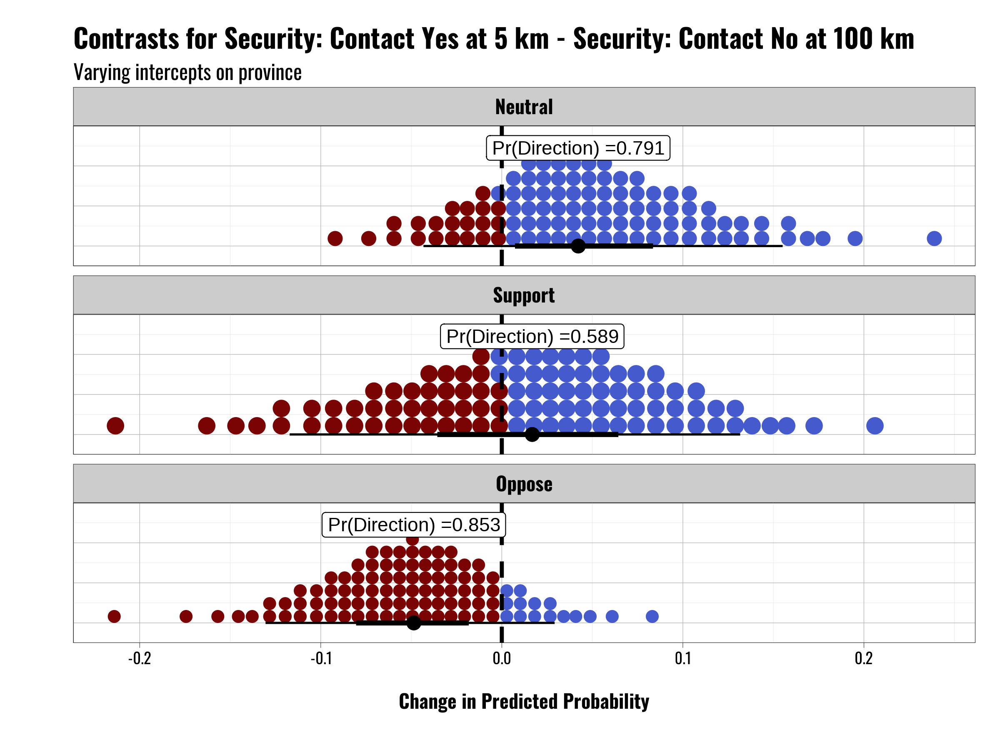
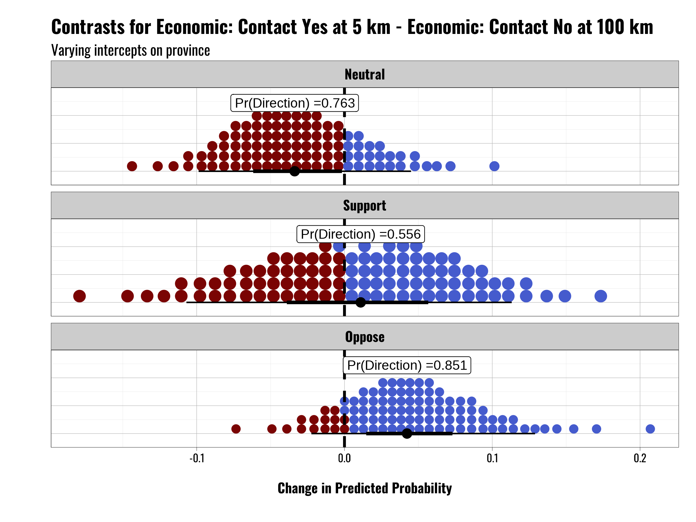

District-Level Contact Models


Model Prior Information
The table below shows a table containing the priors used in our primary models. These prior values are based on the results of Michael A. Allen et al. (2020) and Michael A. Allen et al. (2022).
| prior | class | coef | group | resp | dpar | nlpar | lb | ub | source |
|---|---|---|---|---|---|---|---|---|---|
| normal(-0.115527096293431, 0.0746898478582107) | b | age25to34years | muDKDA | ||||||
| normal(-0.264364428977438, 0.0771474348140498) | b | age35to44years | muDKDA | ||||||
| normal(-0.310635679875, 0.0793458132450198) | b | age45to54years | muDKDA | ||||||
| normal(-0.591063110375, 0.0864210948577346) | b | age55to64years | muDKDA | ||||||
| normal(-0.7819750300625, 0.102111459152194) | b | ageAge65orolder | muDKDA | ||||||
| normal(-0.21036039525875, 0.066430239496218) | b | ideology_z | muDKDA | ||||||
| normal(-0.177445331620506, 0.0846542891265356) | b | income43340–57187 | muDKDA | ||||||
| normal(-0.0688202351897994, 0.0810164555012274) | b | income57188–74062 | muDKDA | ||||||
| normal(-0.33135462308625, 0.0951539271650947) | b | income74063–93937 | muDKDA | ||||||
| normal(-0.420259789, 0.108438284720744) | b | income93938P | muDKDA | ||||||
| normal(0.3817179679375, 0.0534812588294399) | b | genderFemale | muDKDA | ||||||
| normal(0.187247381755561, 0.559903895498748) | b | genderNoneoftheabove | muDKDA | ||||||
| normal(-0.120683957221, 0.0885931273442402) | b | minorityYes | muDKDA | ||||||
| normal(0.526897452375, 0.11070391848471) | b | minorityDeclinetoanswer | muDKDA | ||||||
| normal(0.093231171302, 0.0436864196923117) | b | age25to34years | muOppose | ||||||
| normal(-0.00589146178878125, 0.0432731442808608) | b | age35to44years | muOppose | ||||||
| normal(-0.108936932560675, 0.0443848380069332) | b | age45to54years | muOppose | ||||||
| normal(-0.191239326695, 0.0460858846873078) | b | age55to64years | muOppose | ||||||
| normal(-0.07221941885416, 0.0506447673029727) | b | ageAge65orolder | muOppose | ||||||
| normal(-0.2449342298125, 0.034426937287574) | b | ideology_z | muOppose | ||||||
| normal(-0.0560966381083994, 0.0498566287197429) | b | income43340–57187 | muOppose | ||||||
| normal(0.00221139166980999, 0.0480931846620046) | b | income57188–74062 | muOppose | ||||||
| normal(-0.0317907441445038, 0.0521244516011171) | b | income74063–93937 | muOppose | ||||||
| normal(0.037341838737085, 0.0545672340764236) | b | income93938P | muOppose | ||||||
| normal(-0.0255182066839514, 0.0280212212173748) | b | genderFemale | muOppose | ||||||
| normal(-0.481025324887113, 0.470095713244413) | b | genderNoneoftheabove | muOppose | ||||||
| normal(0.0440561147787925, 0.0458450177925281) | b | minorityYes | muOppose | ||||||
| normal(-0.09997084963471, 0.0906554963524252) | b | minorityDeclinetoanswer | muOppose | ||||||
| normal(-0.11059062508625, 0.0383569138133275) | b | age25to34years | muSupport | ||||||
| normal(-0.0845120590263331, 0.0380732427508409) | b | age35to44years | muSupport | ||||||
| normal(-0.049487419742397, 0.0388210999743934) | b | age45to54years | muSupport | ||||||
| normal(0.106259393951881, 0.039574413499867) | b | age55to64years | muSupport | ||||||
| normal(0.18934788145, 0.0427910868303192) | b | ageAge65orolder | muSupport | ||||||
| normal(0.3765927425, 0.0304434522014762) | b | ideology_z | muSupport | ||||||
| normal(-0.0332231267102306, 0.0430100666576359) | b | income43340–57187 | muSupport | ||||||
| normal(0.0106622106003756, 0.0413379684899538) | b | income57188–74062 | muSupport | ||||||
| normal(-0.0132826649330269, 0.044695638495402) | b | income74063–93937 | muSupport | ||||||
| normal(0.0586482481953687, 0.047301028575002) | b | income93938P | muSupport | ||||||
| normal(-0.2191949691875, 0.0238676724182843) | b | genderFemale | muSupport | ||||||
| normal(-0.683659640773606, 0.39318858885396) | b | genderNoneoftheabove | muSupport | ||||||
| normal(-0.0544279870674812, 0.0377497936434503) | b | minorityYes | muSupport | ||||||
| normal(-0.0625740382552744, 0.0795951894420385) | b | minorityDeclinetoanswer | muSupport | ||||||
| normal(0,1) | b | educationHigherEducationBachelorDEngineer | muDKDA | default | |||||
| normal(0,1) | b | educationHigherEducationMaster’sdegreeorhigher | muDKDA | default | |||||
| normal(0,1) | b | educationPrimaryEducation | muDKDA | default | |||||
| normal(0,1) | b | educationSecondaryEducation | muDKDA | default | |||||
| normal(0,1) | b | educationVocationalSchool | muDKDA | default | |||||
| normal(0,1) | b | income_sourceFullMtimeorcontractworkinthegovernmentorpublicsector | muDKDA | default | |||||
| normal(0,1) | b | income_sourceFullMtimeorcontractworkintheprivatesector | muDKDA | default | |||||
| normal(0,1) | b | income_sourceOthersources | muDKDA | default | |||||
| normal(0,1) | b | income_sourcePensionorretirement | muDKDA | default | |||||
| normal(0,1) | b | income_sourceSelfMemployednonMagricultural | muDKDA | default | |||||
| student_t(3.5, 0, 3) | b | Intercept | muDKDA | default | |||||
| normal(0,1) | b | treatment_groupEconomic | muDKDA | default | |||||
| normal(0,1) | b | treatment_groupSecurity | muDKDA | default | |||||
| normal(0,1) | b | treatment_groupSecurityandEconomic | muDKDA | default | |||||
| student_t(3, 0, 3) | sd | muDKDA | 0 | default | |||||
| student_t(3, 0, 3) | sd | province | muDKDA | default | |||||
| student_t(3, 0, 3) | sd | Intercept | province | muDKDA | default | ||||
| normal(0,1) | b | educationHigherEducationBachelorDEngineer | muOppose | default | |||||
| normal(0,1) | b | educationHigherEducationMaster’sdegreeorhigher | muOppose | default | |||||
| normal(0,1) | b | educationPrimaryEducation | muOppose | default | |||||
| normal(0,1) | b | educationSecondaryEducation | muOppose | default | |||||
| normal(0,1) | b | educationVocationalSchool | muOppose | default | |||||
| normal(0,1) | b | income_sourceFullMtimeorcontractworkinthegovernmentorpublicsector | muOppose | default | |||||
| normal(0,1) | b | income_sourceFullMtimeorcontractworkintheprivatesector | muOppose | default | |||||
| normal(0,1) | b | income_sourceOthersources | muOppose | default | |||||
| normal(0,1) | b | income_sourcePensionorretirement | muOppose | default | |||||
| normal(0,1) | b | income_sourceSelfMemployednonMagricultural | muOppose | default | |||||
| student_t(3.5, 0, 3) | b | Intercept | muOppose | default | |||||
| normal(0,1) | b | treatment_groupEconomic | muOppose | default | |||||
| normal(0,1) | b | treatment_groupSecurity | muOppose | default | |||||
| normal(0,1) | b | treatment_groupSecurityandEconomic | muOppose | default | |||||
| student_t(3, 0, 3) | sd | muOppose | 0 | default | |||||
| student_t(3, 0, 3) | sd | province | muOppose | default | |||||
| student_t(3, 0, 3) | sd | Intercept | province | muOppose | default | ||||
| normal(0,1) | b | educationHigherEducationBachelorDEngineer | muSupport | default | |||||
| normal(0,1) | b | educationHigherEducationMaster’sdegreeorhigher | muSupport | default | |||||
| normal(0,1) | b | educationPrimaryEducation | muSupport | default | |||||
| normal(0,1) | b | educationSecondaryEducation | muSupport | default | |||||
| normal(0,1) | b | educationVocationalSchool | muSupport | default | |||||
| normal(0,1) | b | income_sourceFullMtimeorcontractworkinthegovernmentorpublicsector | muSupport | default | |||||
| normal(0,1) | b | income_sourceFullMtimeorcontractworkintheprivatesector | muSupport | default | |||||
| normal(0,1) | b | income_sourceOthersources | muSupport | default | |||||
| normal(0,1) | b | income_sourcePensionorretirement | muSupport | default | |||||
| normal(0,1) | b | income_sourceSelfMemployednonMagricultural | muSupport | default | |||||
| student_t(3.5, 0, 3) | b | Intercept | muSupport | default | |||||
| normal(0,1) | b | treatment_groupEconomic | muSupport | default | |||||
| normal(0,1) | b | treatment_groupSecurity | muSupport | default | |||||
| normal(0,1) | b | treatment_groupSecurityandEconomic | muSupport | default | |||||
| student_t(3, 0, 3) | sd | muSupport | 0 | default | |||||
| student_t(3, 0, 3) | sd | province | muSupport | default | |||||
| student_t(3, 0, 3) | sd | Intercept | province | muSupport | default |
Model Diagnostics
The following section contains model diagnostic plots for all of the models included in our analysis, as well as supplementary analyses.
Posterior Predictive Checks

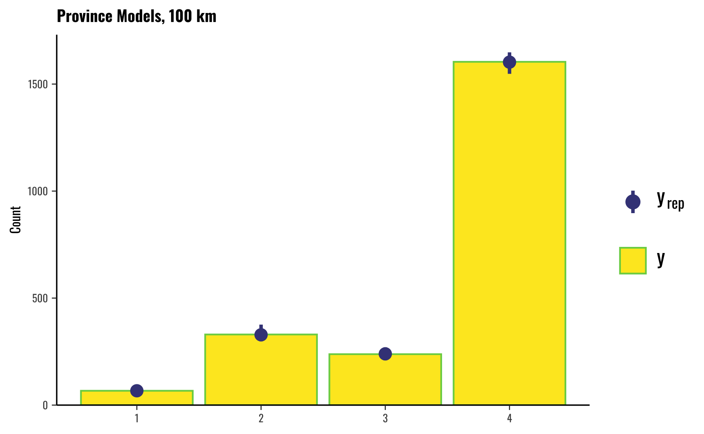


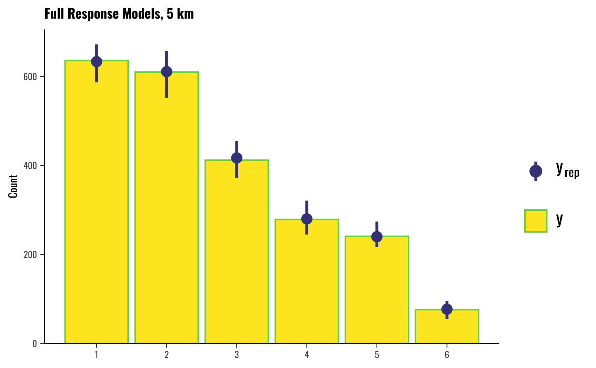


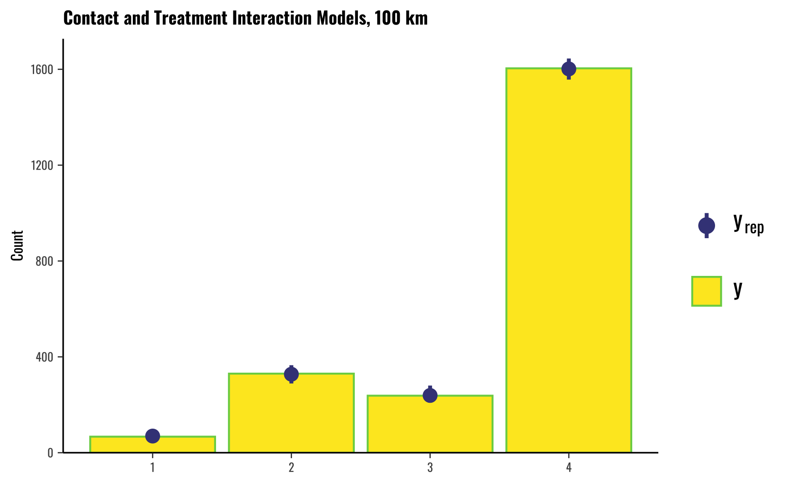
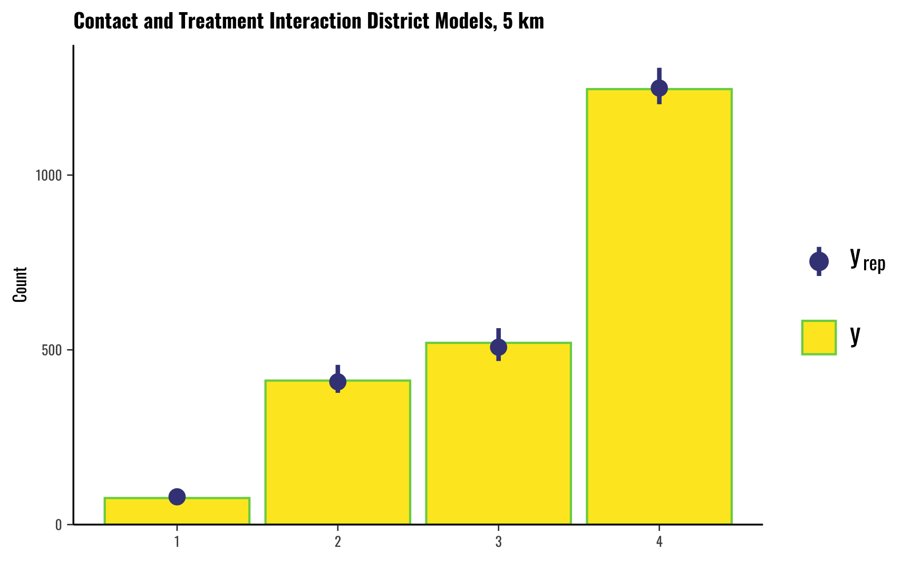
Traceplots


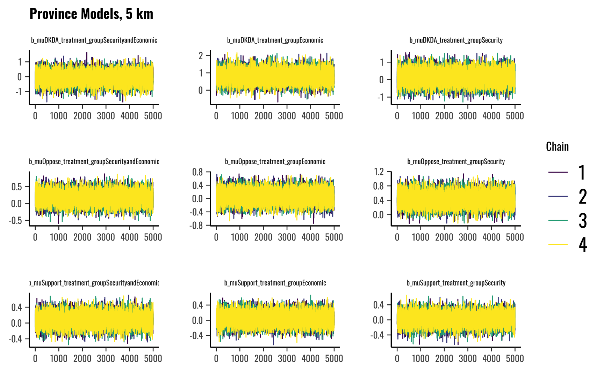
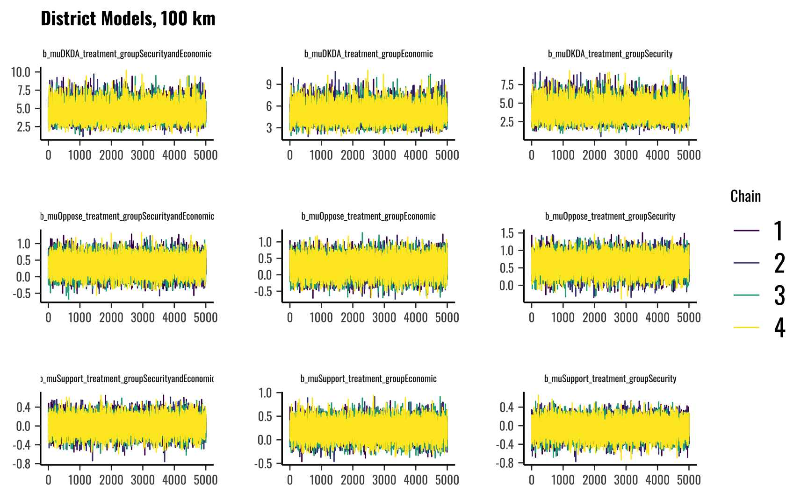


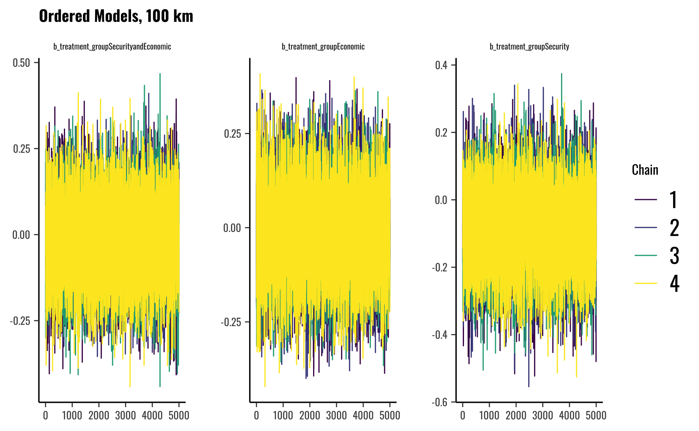


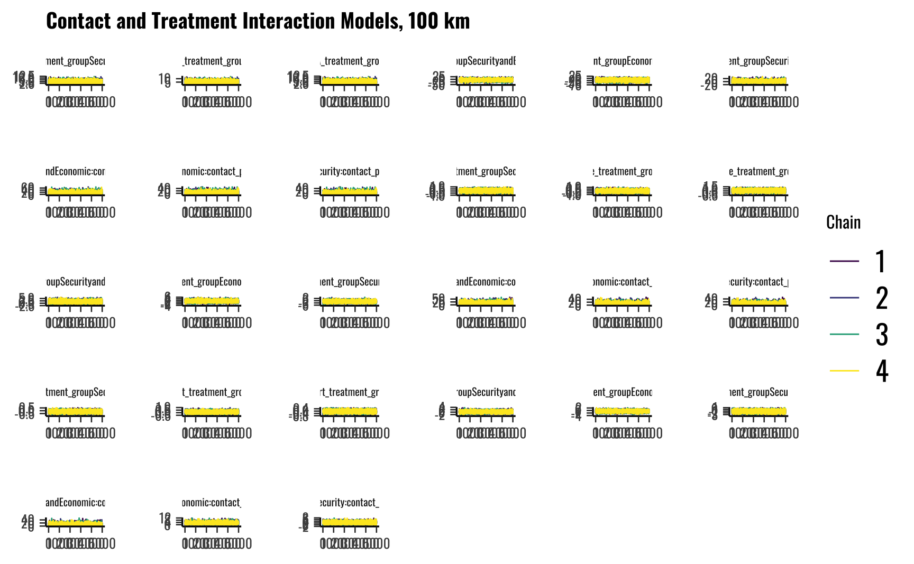


Rhat Statistics


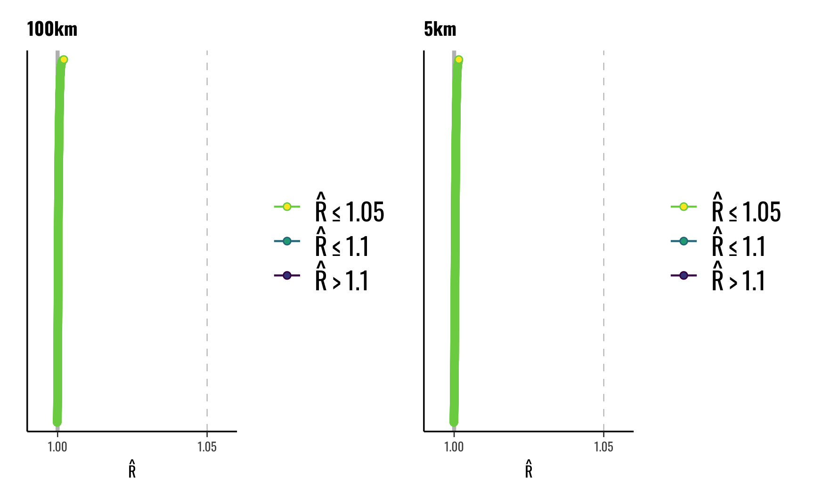


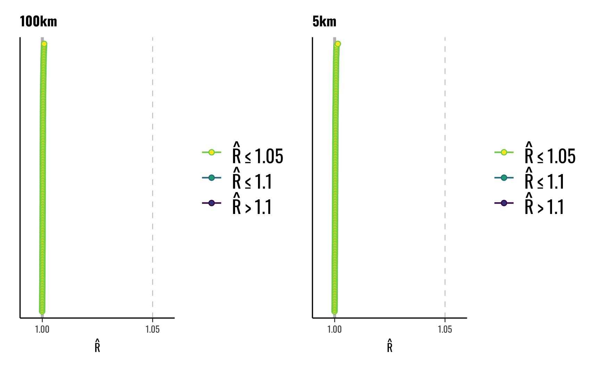


References
Allen, Michael A., Michael E. Flynn, Michael E. Martinez Machain, and and Andrew Stravers. 2022. Beyond the Wire: US Military Deployments and Host Country Public Opinion. Oxford, New York: Oxford University Press.
Allen, Michael A, Michael E Flynn, Carla Martinez Machain, and Andrew Stravers. 2020. “Outside the Wire: US Military Deployments and Public Opinion in Host States.” American Political Science Review 114(2): 326–41.
Bürkner, Paul-Christian. 2017. “Brms: An R Package for Bayesian Multilevel Models Using Stan.” Journal of Statistical Software 80: 1–28.
———. 2018. “Advanced Bayesian Multilevel Modeling with the R Package Brms.” The R Journal 10(1): 395–411.
Kay, Matthew. “{{Tidybayes}: }Tidy Data and Geoms for {}Bayesian{} Models{}.”
Kruschke, John K. 2015. Doing Bayesian Data Analysis. Second. New York, NY: Academic Press.
Footnotes
Note that we omit the Don’t know/Decline category because there are generally very few observations for this response group. For both the 100 km and 5 km questions we see only about 3% of respondents answer “Don’t know/Decline to answer”.↩︎